|
|
JANDEK: Discography
[ Return to the Jandek main page ]
|
|
|
Early:
Late:
Live:
- 0779: Glasgow Sunday (recorded 2004, released 2005)
- 0783: Newcastle Sunday (recorded 2005, released 2006)
- 0785: Glasgow Monday (recorded 2005, released 2006)
- 0786: Austin Sunday (recorded 2005, released 2006)
- 0788: Manhattan Tuesday (recorded 2005, released 2007)
- 0789: Brooklyn Wednesday (recorded 2005, released 2007)
- 0791: Glasgow Friday (recorded 2005, released 2008)
- 0792: Glasgow Sunday 2005 (recorded 2005, released 2008)
- 0793: London Tuesday (recorded 2005, released 2008)
- 0795: Hasselt Saturday (recorded 2005, released 2009)
- 0796: Helsinki Saturday (recorded 2005, released 2009)
Track times for Corwoods 0739 through 0760 are from the original
LP’s and are often a bit different on the CD’s.
|
Corwood 0739
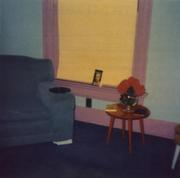
|
Songs
Side 1:
Naked in the Afternoon (4:43) /
First You Think Your Fortune’s Lovely (8:04) /
What Can I Say What Can I Sing (4:44) /
Show Me the Way, O Lord (4:10);
Side 2:
Know Thy Self (2:31) /
They Told Me About You (4:26) /
Cave In On You (4:18) /
They Told Me I Was a Fool (5:04) /
European Jewel (incomplete) (4:43)
Cover Chair beside a window. The shade is drawn. The
colors are rather garish — could the photo have been tinted
after the fact? A paperback book is leaning against the shade, and
there are two more books on a table. The book in the window has been
identified as a Penguin edition of the complete plays of Christopher
Marlowe. (More recent editions of the same book use the same picture
of Marlowe, but with a different design.)
Editions The original LP was credited to “The
Units”. The CD reissues are credited to Jandek, a change Forced
Exposure has called “an epic travesty in the minds of a few
hardliners.” A note
from Corwood accompanying the 2005 edition said “0739 remaster,
all other editions obsolete... We really believe
it is much improved without compromise... Note: track 3 second 124,
the word ‘do’ was recaptured from the vinyl and inserted.
Somehow it got transposed to the word ‘feel’ in one of
the two previous CD masters.’ I only have copies of the first
and third CD editions, so I don’t know how the second edition
differs from the others, but the third edition can be identified by
the bar code on the back, the longer track times (4:51, 8:10, and so on),
and the less intense colors on the front. The 2008 vinyl reissue
on Jackpot Records
is from the same digital master as the 2005 edition.
Data If anyone knows of a numerological justification for
starting the Corwood catalog numbers with 0739, please let me know.
Note that the date is a full three years before his second LP. In the
Trubee interview, Jandek says that 1000 copies of the LP were pressed.
“European Jewel” is the first of Jandek’s five
recorded versions of the same song. The version here is played on
electric guitar (the rest of the album is acoustic). “You think
you’re cool/ A European jewel...”
Review excerpts
- uncredited, Forced Exposure web site (http://www.forcedexposure.com/),
1999. “There were plenty of significant events in 1978, (“You’re The
One That I Want” by John Travolta & Olivia Newton John was quite a
popular track, for example), and one of the most low-key yet
significant events was the debut LP release on the Corwood Industries
label out of Houston, TX. Mysteriously enough it came out under the
name “The Units”, but it was obviously a singular vision and not a
band. That individual would come to be more commonly known as Jandek,
and a total of 28 albums have been issued on Corwood to date. In 1978
however, there was no telling what was to come. Ready For The
House was a mostly acoustic guitar/vocal record, of ethereal,
shambling post-blues form. It set the stage for one the most
individualistic and fascinating bodies of work in contemporary
music. The original LP was casually issued in a beautiful color
sleeve, featuring a mundane but striking image of a living room chair
& table (replicated with almost pop-art brilliance on this CD). No
other information was ever offered. As it remains today. Ready
For The House sounded like no other record, and it’s doubtful
that more than a handful of copies were sold at the time (promotional
copies sent to out radio stations and reviewers were more
voluminous). A second Jandek album wouldn’t come out till 1981. By the
mid-80s a wealth of documentation had occurred and the early Corwood
albums became notoriously unavailable just as people were finally
getting up the gumption to consider buying them. This record has been
“in demand” for over a decade now and Corwood has finally caved in and
reissued it proper. Find out what you’ve been missing for the last 21
years!”
- Phil Milstein, Op issue L. “Sterling Smith has
created an album that is homemade in every way, and it is a joy to
listen to... The Units are completely enveloped in their own musical
world. It shows in Smith’s thin, strained voice, in his unusual
guitar style, and in his oblique, personal lyrics. This enraptured
quality is one of the strongest points of the album, and one The Units
share with great primitives like 1/2 Japanese, The Shaggs, and the
Legendary Stardust Cowboy. Here it servers as a deterrent as well as a
benefit. Unlike the others mentioned, Smith’s LP just doesn’t
communicate itself very effectively. We can hear the wistfulness, the
lostness, the loneliness, the anger and the joy Smith fills his songs
with, but we feel it in terms of sympathy, not empathy. We feel for
him, not with him... The Units have come up with an original musical
language. Because of this, the songs sound very similar to each other
at first, but after a while they each begin to prove themselves as
wholly autonomous compositions. The guitar-playing is slow, only
faintly melodic, alternately rich and tinny (sometimes both at once);
occasionally Smith will slam the strings in anger or in hurt or in
something, and the playing is so engrossing that these abrasive
moments are enough to knock the listener on her butt!... Another
endearing characteristic of Ready for the House is its
overwhelming amateurness. The rough-edged crudity of each touch seems
almost deliberate, but it carries a sweet beauty that a more polished
production would probably have softened... Another highlight is the
cover itself. Jad Fairs calls it ‘one of the best covers
I’ve ever seen, and I agree... it really is gorgeous... Any one
of us could have made this record, and as Lester Bangs often argued,
that’s half the point right there. Bring the means of production
to ‘the people,’ and they will out-create the moneyfolks
almost every time.”
- Eddie Flowers. Quoted at The History of Rock Music, Vol. 4
(website).
“The stark, painfully exposed, untuned-acoustic blues/folk that once
made for such a richly uncomfortable listening experience now sounds
focused and brilliant. it’s not that the music is any less dark, or
the technique any more refined than it was 22 years ago; it’s just
that the world has moved closer to Jandek’s reality. The anxious
beauty of isolation and doubt.”
- Brogden, Garry. Vinyl Absolution #20 (October 2002)
(website).
“I like to play Ready For The House just as the light is
fading on the day: as it creepily gets darker, Jandek is the perfect
accompaniment for making you feel that, yep, life really isn’t worth
living. It’s not necessarily what he says, it’s the way he says it...
The tension is palpable, like there’s a vampire in the room and you
just know that you’re on the menu... But, there’s something strangely
life affirming about the whole thing. That someone like this, with the
ability to track down those dark corners of the brain can somehow get
his art (or artifice) out there.”
- uncredited, Aquarius Records catalog (website), 2002?.
“The final song on the album... sounds a bit like a lost Velvet
Underground demo, exhibiting a rare outside influence on his isolated
world.”
- Daniel Marks, web review (full
review). “Total isolation... is one of the themes of
Ready for the House... particularly in the second track,
‘First You Think Your Fortune’s Lovely’. The song is about
someone who does not wish be a part of the world, either because he
feels he cannot, or because the world isn’t letting him... The vocals
are sung and spoken. Some songs almost have a vocal melody,
particularly the first two and the last tracks, but he never
approaches a real ‘song’ in any definition we’re familiar
with. Oddly, he always makes sure it rhymes, in a rare show of
artistic effort... The single string plucking is used in a very creepy
way on ‘They Told Me About You’. Jandek tunes his guitar
and one chord not in a musical way, but more as an ambience. The sound
of the one chord fits the feelings of sadness and isolation expressed
in the lyrics... Jandek uses [the guitar] as a second voice, groaning
its one, mournful ‘word’ over and over. One rule though:
never touch the fretboard... One of the best of the typically boring
Early Period.”
- Aaron
Goldberg, web
review for Perfect Sound Forever.
“If you can hack this track [‘Naked in the Afternoon’] with no problem, you can pretty much well handle 90% of the man's voluminous catalogue. The sonic trademarks are there: the detuned at times death rattle acoustic guitar, the reverby haunted whiny voice, the banal, abstracted and often poetic lyrics... pretty much a homebrewed white boy-blues album, taking its chops (either purposefully or accidentally) from the Delta Blues via suburban Houston. In fact it's Jandek's inability to play the blues well that makes it so fucking 'authentically' Blues-like, in a sort of John Lee Hooker droney sort of way. Album closer ‘European Jewel’ has Jandek plug in an electric guitar and prove outright that he can play that lazy-hazy Lou Reed style as good as the best of ’em...”
Other commentary
- Irwin Chusid, WHRB interview, 2003. “I was given
a copy of Ready for the House in 1978, I think... I was
really stunned by it... I was stunned at the sheer amusicality
or unmusicality or nonmusicality, the sheer emptiness of it.
This was an album that started nowhere, went nowhere, and ended
up nowhere... It was really like hearing a posthumous recording,
a recording that was made after they had died... I had
never heard anything that was so naked.”
|
Corwood 0740
![[album cover]](images/covers/thumb-0740.jpg)
|
Songs
Side 1:
Feathered Drums (3:27) /
Point Judith (4:32) /
I Knew You Would Leave (10:06) /
Can I See Your Clock (2:29);
Side 2:
Wild Strawberries (6:00) /
Forgive Me (3:58) /
Hilltop Serenade (Part 1, 3:50; Part 2, 1:23) /
You’re the Best One (2:52) /
Delinquent Words (3:43)
Cover Black and white head-and-shoulders shot of Jandek
in front of a curtain, staring sullenly at the camera. There is some
damage to the photo if you look closely, as if it had stuck to the
photo above it in a stack, or as if someone had had it in their
wallet. It could be a photo booth photo. Jandek appears to
be a young adult in this photo — I think of it as the “badass
rock’n’roll Jandek” photo, since he’s wearing a leather jacket over a
sort of low necked T-shirt and has a chain around his neck (crooked:
you can see the clasp on the side of his neck). He even looks
unshaven, though it could just as easily be an effect of the
lighting. A far cry both from the adolescent Jandeks and the mature,
adult Jandeks who populate the other covers.
Editions This CD went out of print briefly, I think only for
a month or two, before being re-reissued in April 2005. The front
cover on the reissue is the same, but the type on the back and on the
disc itself was redone and a bar code added. Most track times on the
new edition are a bit longer because
silences were added to the start and/or end of the tracks. One track,
“I Knew You Would Leave”, was apparently remastered, since
the old version has more tape hiss, and the new version is missing a
few seconds of guitar playing after Jandek sings “Sometimes I
know it not” but before he sings “As the air, no air is
still”. (I’m not certain there aren’t other
alterations.)
Data Three year gap between the first two LP’s —
Jandek’s lost years.
Comments Musically, this is the most catatonic and
monochromatic Jandek LP, the most sullen and withdrawn. The songs
drift past one by one like ships in the fog, propelled by an acoustic
guitarist working slow, steady variations on the same handful of
cracked notes. Even more than the first LP, this is the distilled
essence of Jandek, the baseline from which the rest of his music
develops. Though the songs here are only minimally differentiated
musically, the lyrics are uncommonly vivid, poetic, and far-ranging.
“Oh universe!” Jandek sings “on a journey to the
stars”, but his spaceship’s full of all kinds of junk from
Earth: spiders, a phonograph, some mica, a clown suit, the Tree of
Knowledge. Several songs are sea-themed. On many later albums Jandek
will be floating down a river; these are his thoughts once he’s
reached the ocean. It’s low tide.
Review excerpts
- Michael Huntsberger, Op issue M. “It
is a sweltering afternoon in Texas. In a tiny bedroom,
all windows curtained against the sun, sits a man, or a boy.
He is plain, blond-haired, looks like an extra from a B Sci-Fi
thriller. He holds a Sears guitar he was given as a child. The
guitar has never been tuned — it may only have five strings.
It is connected to a cheap amp. He plucks the strings, sometimes
together, sometimes singly, and sings into an old cheap microphone.
With a Dylan-like inflection, he pours the lyrics from his soul
while plucking the guitar... The recording is made on an old
Wollensak reel-to-reel with broken meters and no volume knob.
He records 12 songs and presses them into a record... it is so
deeply personal as to be profound.”
-
uncredited, Forced Exposure web site (http://www.forcedexposure.com/),
2000.
“The cover features a crude black & white photobooth-style portrait
of the man we’ve come to assume as the singer, depicted at his most
youthful, ready to accompany the power & glory of the Jandekian
muse. Upon it’s release Six And Six defined Jandek as a
significant album artist (no mere one-shot), featuring some of his
most mesmerizing variations of trance-blues, especially the 10-minute
centerpiece, “I Knew You Would Leave”. Crucial, all round.”
- Eddie Flowers. Quoted at The History of Rock Music, Vol. 4
(website).
“The approach is basically the same [as on Ready for the House] — free
pick’n’strum acoustic guitar and depressed vocals — although he adds
echo (natural?) to create an even denser sense of mental murk.”
- uncredited, Aquarius Records catalog (website), 2002?.
“A raw glimpse into the hermetic soul of Jandek through his
ultra-minimal, angular trance-blues soaked with lots of spring reverb
and sprinkled with his wavering vocal neuroses.”
- Daniel Marks, web review (full
review). “This is one creepy record... He seems at his most
desperate and lonely on this album, but he still has enough strength
to write some good songs. ‘Point Judith’ is a longing
reminiscence for what sounds like an old childhood summer
retreat. When Jandek sings ‘You can hear the boats
sailing’, you can almost feel the ghostliness of this dead
resort town... On side two, Jandeks drags us kicking and screaming
into his echo-drenched nightmare, and the album becomes very listless
and incredibly unlistenable.”
- Aaron
Goldberg, web
review for Perfect Sound Forever.
“
Jandek totally embraces the minimalist ‘Blues’ thing on Six and Six, from the Robert Johnson homage on the album cover to the springy/droney guitar plucks, but it’s his singing on this one that really gets you. Jandek talks/raps into a stoned, thousand yard-stare type reverb soaked drone, that could sound like Jim Morrison if he drank and smoked and took a little bit less acid, or Dylan if he took more. Jandek’s vocal performance on ‘Point Judith’ is the total business, he goes for a 10-minute work-out on ‘I Knew You Would Leave’, and ‘Delinquent Words’ is all psychotic menace, the sonic equivalent of Martin Sheen in Badlands.”
|
Corwood 0741
![[album cover]](images/covers/thumb-0741.jpg)
|
Songs
Side 1:
Your Condition (5:16) /
What Did I Hear (4:37) /
Just Whisper (3:46) /
Oh Jenny (3:40) /
Until Then (2:20);
Side 2:
So Fly, Max (2:51) /
The Janitor (3:31) /
Don’t Know If I Care (2:30) /
John Came (1:11) /
Jessica (2:29) /
Jackson’s Gone Down the Mississippi (2:37) /
The Second End (3:17)
Data “Jackson’s Gone Down the Mississippi” is one of
Jandek’s many references to going “down a river”. “The Janitor” has a
sequel on The Living End called
“Janitor’s Dead”.
Review excerpts
-
Billy Kiely, Forced Exposure web site (http://www.forcedexposure.com/),
2000. “This record, like Jandek’s first (Ready
for the House), is comprised of not just basically one
chord throughout, but as far as I can tell he barely even touches the
fret board of his guitar, using his instrument more for atmosphere and
percussion than anything like a ‘song’. The usual lyrical motifs of
the blues are all over the place, including women, roads, death, and
even janitors, which in my tweaked view of the universe hearkens back
to Howlin’ Wolf’s paean to a custodian on his last record ca. 1972
(‘Watergate Blues’), and much like the Loren Mazzacane Connors
Unaccompanied Acoustic Guitar Improvisations Vols 1–9
1979–1980 box set reissue on Ecstatic Yod, this is proof that
something that might be called the blues can be non-formulaic, just
undiluted expression, and actually just a skeleton on which to drape a
very whacked universe of your very own.”
- John Foster, Op issue N. “Personal songs... by...
a hopeless amateur whose limited, rather unique guitar-playing
tends to meld with his whispery vocals, taking on a trancelike
ambience. For sheer tunelessness only Kenneth Higney’s
Attic Demonstration comes to mind... you really have to
force yourself to concentrate on it.”
- Eddie Flowers. Quoted at The History of Rock Music, Vol. 4
(website).
“Some highlights: “Your Condition” is like Roky Erickson trying to
remember a dylan song during a rest-hospital breakdown; the
accusatory “What Did I Hear” blues with its shattered lyrics (“I guess
there’s no such thing as today/ or any day”); rockin’ on “Just
Whisper” like a detuned Lou Reed playing “I’m Waiting For the Man” in
his sleep; the finger-pluckin’ “Until Then,” rough personal emotional,
ripped straight from the heart of pre-WWII country blues; Jandek
feeling out the lyrics in a jazz-like way on “So Fly, Max”; pleading
for understanding from a doubtful God on “Don’t Know If I Care” and
finding a surprisingly pleasant drone for a moment (but only a
moment).”
- uncredited, Aquarius Records catalog (website), 2002?.
“Later On is his second [sic] album of lithium-soaked
folk; a pseudo-jangle on the guitar barely carrying a tune and
daydreaming poetry crooned with a creepier voice-crack than Will
Oldham could ever conjur. The mysteries of Jandek, personal and
musical, may never be fully revealed, but his peculiar genius is
highly recommended none the less.”
- Aaron
Goldberg, web
review for Perfect Sound Forever.
“Jandek start to experiment with his ‘sound’... The album finds Jandek shifting moods in bi-polar frequency, and also finds him starting to attack the guitar rather than play. You can actually hear some of the tracks start to fall apart, offering some sweet respite with the beautiful ‘Jessica’ and ‘Jackson’s Gone Down the Mississippi’, only to fuck it all up with closer ‘The Second End’ that features the plunky, grating sound that will become more prevalent later in Jandek’s ‘career.’”
|
Corwood 0742
![[album cover]](images/covers/thumb-0742.jpg)
|
Songs
Side 1:
Down in a Mirror (4:25) /
European Jewel (4:24) /
Unconditional Authority (3:29) /
Poor Boy (2:30) /
You Think You Know How To Score (2:16) /
Nancy Sings (2:43);
Side 2:
No Break (3:18) /
Mostly All From You (2:52) /
Blue Blister (2:40) /
The Times (3:10) /
Love, Love (4:07) /
The First End (4:24)
Cover Grainy black and white shot of a morose young Jandek,
the youngest version of him to be found on any of the covers.
It’s probably so grainy because it’s just a small,
zoomed-in-on portion of a larger picture, perhaps of a group.
Editions This CD was re-reissued in July 2005. A note
from Corwood accompanying the new edition said “0742 remastered,
previous editions are now obsolete.” A bar code
was added on the back and the track times are now 9 to 13 seconds
longer due to silence added to the start and end of each track.
(I’m not certain there aren’t other alterations.)
Data “European Jewel” reappears. “Nancy
Sings” is the first appearance by an outside vocalist on a
Jandek record. Another woman singer turns up on the next track,
“No Break”. As Jandek plays guitar she exclaims jokingly,
“You’re a jerk! You’re nuts!” In a 1982
letter to Irwin Chusid, Corwood says the singer on this track is
Nancy’s sister Pat. We’ll hear her again later on
Somebody in the Snow.
Review excerpts
-
uncredited, Forced Exposure web site (http://www.forcedexposure.com/),
2000.
“Notable for the track “Nancy Sings” which features the first
appearance by an outside vocalist on a Jandek record — an absolutely
riveting acoustic gospel-blues tinged track.”
- Eddie Flowers. Quoted at The History of Rock Music, Vol. 4
(website).
“The echo-drenched journey into Jandek’s world begins with
“Down in a Mirror”, the artist delicately plucking his
free-tuned guitar and tappin’ shoes on the floor ’neath
him. And then electricity! Jandek’s first electric-guitar piece,
“European Jewel,” comes screamin’ in like Elmore
James having a seizure. Pounding drums and bass enter for a frenzied
attack not too far from the same thing Sonic Youth was doing in NYC at
the same time. Back to acoustic guitar for “Unconditional
Authority,” a depressed semi-boogie, and near perfect blend of
solo Syd Barrett and John Lee Hooker at his loneliest. “Poor
Boy” comes mighty close to early blues in lyric and open-strum
structure, with none of the self-conscious posturing of most white
“bluesmen”. “You Think You Know How to Score”
is harmonica-holder Dylan with the Holy Modal Rounders shootin’
speed in his butt: scary but hard not to watch and chuckle as head
collides with concrete. “Nancy Sings” introduces the first
of Jandek’s usually anonymous female vocal collaborators —
and it’s a fragile, beautiful thing. Back to electric for
“No Break”, with nancy on vocals, and a drummer (Nancy?)
rattling about. This fragmented non-song could be a mellow-mood Harry
Pussy jam from a decade later... This ’un’s a classic
Jandek album — highly recommended.”
- Daniel Marks, web review (full
review). “This my favorite album of Jandek’s early
period, combining just the right sense of depression, mysteriousness,
and spirituality that makes Jandek’s work in this time so
intriguing... His guitar tuning has changed since Ready but it
still comes nowhere near standard, or even any of the typical aberrant
tunings, like E or D... The second track, ‘European
Jewel’, sends a blast of electric into your ears... Jandek and
his band stumble through a screaming version of the familiar
‘European Jewel’ riff before he sings the last part of the
song, starting with the verse he never completed... [then] the band
goes out in full improv mode for another three minutes... Bassist John
even has a solo, walking up the fretboard in almost perfect time...
Jandek brings us his most beautiful song on track six, appropriately
titled ‘Nancy Sings’. While he plucks slowly one note at
a time on guitar, angel-voiced Nancy sings poetic lyrics about
nature... Evidently from track nine, ‘Blue Blister’,
Jandek is a smoker, which explain why his voice gets so much heavier
as time goes on (check out one of the spoken word albums to see what I
mean). On track eleven, ‘Love, Love’, agent Smith shares
with us some wisdom he’s gained from his travel... I swear my
minister gave the same sermon once.”
- Aaron
Goldberg, web
review for Perfect Sound Forever.
“The album kicks off with another classic haunted track... in which you can hear some weird almost freeform electronic tape hiss (?!) and Jandek's foot stomp, that also seems to have been accidentally fractalized into something greater than its parts by shitty technology. Then everything fucking EXPLODES and IMPLODES in Dylan-Live-1966-bootleg-proportions on ‘European Jewel’, featuring the funniest Rick Danko-meets-Mingus bass impersonation ever put onto tape! Jandek's guitar playing is getting choppier and more manic on this record until the freak-folk classic ‘Nancy Sings’ comes out of fucking nowhere for no reason causing time to momentarily stop — amazing what a woman's touch can do! The rest of the album noodles around aimlessly for a bit, but is no less ‘exploratory’, with some nice, frustrated steel-string buzz/drone on trax like ‘Blue Blister’ (speaks for itself really). It's interesting to note that despite the record being the most 'fractured' of his albums so far, Jandek's tapping foot is heard on nearly all tracks, proving there is some method to the meshigarse!”
|
Corwood 0743
![[album cover]](images/covers/thumb-0743.jpg)
|
Songs
Side 1:
Gretchen (2:47) /
One Step Ahead (2:06) /
Supression (2:06) /
Strange Phenomenon (3:09) /
You Can Stop Now (2:20) /
Comedy (1:49) /
Sailors (1:47) /
Bludgeon (1:50) /
All in an Apple Orchard (2:37);
Side 2:
She Fell Down (3:30) /
Professional (2:25) /
Anticipation (2:43) /
Alexandria Knows (2:34) /
Quite Nonchalant (2:16) /
Relief of the Night (3:18) /
Crime Pays (3:00)
Data The date does not actually appear anywhere either on the
cover or on the record itself. The misspelling of
“suppression” is Corwood’s not mine.
Comments Another all acoustic LP, but an uncommonly emphatic,
even aggressive one — Jandek really digs in on the vocals and
guitar, sounding downright sardonic on songs like “You Can Stop
Now” and “Professional”, with lyrics to match.
Sometimes he plucks the strings so hard that the notes begin buzzy and
bend in pitch. But there are also some very delicate songs like
“All in an Apple Orchard”.
Review excerpts
- John DeAngelis, Op issue S. “Jandek
plays acoustic guitar — seemingly without any formal chordal
knowledge — and sings in a drifty, sometimes eerie voice
that suggests he listened to a lot of obscure psychedelic music,
and maybe some Doors and acoustic Neil Young, too. Over the course
of a three-minute song, not a lot of lyrical or musical development
takes place; you might find this hard to sit through...”
- Christopher Stigliano, Op issue T, pg. 71. “Yet
again... another LP of atonal guitar with moaning vocals that remind
me of the delta blues played by a member of the Godz... Totally
incomprehensible and grating on the nerves... Who says that art has to
be pretty anyway?”
- Billy Kiely, Forced Exposure web site (http://www.forcedexposure.com/),
2000. “The title for this one actually comes from a lyric from his
track ‘Can I See Your Clock’ from his second LP Six And Six, and so one can already see
The Artist creating an oeuvre filled with allusions, hints, motifs
that really don’t point at anything in particular. Herein lies one of
Jandek’s peculiar charms: his songs’ resilience. We find him in a
more ‘aggressive’ mode here — singing and playing here like he really
‘means it’; therein lies another charm: we are never really sure what
he means. All in all, Living in a Moon So Blue is one of his best, the
presentation and approach seemingly from a different time altogether,
how about some grayish Eastern Bloc country, ca. 1962?”
- Eddie Flowers. Quoted at The History of Rock Music, Vol. 4
(website).
“The mood is kinda upbeat, and the playing is particularly assertive
(still “untuned” and moving freely, though). There are songs about
“Gretchen” and “Alexandria Knows” (with harmonica that starts like a
squealing synth)... One of the best Jandek albums.”
- Aaron
Goldberg, web
review for Perfect Sound Forever.
“This is where Jandek's stuff gets really ‘difficult’ and damaged... Lots of pissed-off down strokes, tracks that build into blister-inducing dirges and just some seriously fucked up mess all around. The album feels like a series of sketches that Jandek just bashed out quite quickly...”
|
Corwood 0744
![[album cover]](images/covers/thumb-0744.jpg)
|
Songs
Side 1:
Michael (2:57) /
This is For You (3:10) /
Riddles Riddling Me (2:44) /
Basic Themes (2:50) /
I See Lights (2:34) /
Rather Be Blind (1:53) /
Away (2:18) /
Don’t Get Too Upset (2:35);
Side 2:
A Letter (2:23) /
Nevermore (3:01) /
Sand I (2:30) /
Nepoleon [sic] in Russia (3:05) /
Split to the East (2:55) /
Number 14 (2:43) /
Blood and Bone (3:17)
Data The date does not appear on the back cover as on most
LP’s, only on the label on side 1 of the record. The “I” in “Sand I”
is handwritten rather than typeset on both the back cover and the
label.
Review excerpts
- Calvin Johnson, Op issue U, pg 60. “...ghost town
music... Spooky, personal, honest, it fills the room, sets the moods. I
return to Jandek, feel compelled to place Staring at the Cellophane
or Six and Six on the turntable...”
- Eddie Flowers. Quoted at The History of Rock Music, Vol. 4
(website).
“The focus here is on a very singular mid-tempo acoustic-guitar sound,
with special attention to finger pickin’. The instrumental “This Is
For You” and semi-instrumental “Basic Themes” (just a bit of wordless
vocalizing at the end) stand out, and even most of the other pieces
seem more concerned with the guitar than Jandek’s usual depressed
lyrical statements. The big exceptions are the muted hard-strum
violence of “Sound I”, which is mostly instrumental but quite
different from the melancholy plucked-string approach; and a weird
history lesson called “Nepoleon in Russia” [sic].”
- uncredited, Aquarius Records catalog (website), 2002?.
“The cover of Jandek’s sixth album... is nearly identical to Living In A Moon So
Blue. Furthermore, the open chord guitar pick & strum
barely structuring the vocal wisp and waver from Jandek is nearly
indistinguishable on these two albums. It may be a bold question to
ask, but is the content from Jandek’s faded photographs to be seen as
indicative of what can be found inside?”
- Aaron
Goldberg, web
review for Perfect Sound Forever.
“The downward spiral continues... Maybe Jandek was
deconstructing his work in order to take his next artistic
step...”
|
Corwood 0745
![[album cover]](images/covers/thumb-0745.jpg)
|
Songs
Side 1:
Liquids Flow to the Sea (4:14) /
Elementary Talk (2:24) /
John Plays Drums (2:28) /
No Time (2:00) /
You Don’t Have to Entertain Me (1:53) /
Decree (1:51) /
New String (2:18) /
Echo (2:43);
Side 2:
Centaur Train (2:26) /
Dance of Death (2:22) /
If Your Fortune Fails You (2:58) /
I’ll Come Back (2:52) /
About Today (2:08) /
Such a Thrill (1:35) /
Didn’t Have to Cry (2:15) /
They Knew My Game (3:12)
Cover A desk with a guitar case next to it. First
color photo since the first LP.
Data Title of “Liquids Flow to the Sea” reiterates river
theme. “John Plays Drums” is the first appearance of an outside
instrumentalist on a Jandek record; it’s another version, with Jandek
on vocals, of the song previously recorded as “Nancy Sings”.
Review excerpts
- GK, Op issue X. “He continues to moan like
a modern Robert Johnson type... A dark, suicidal void.”
- Eddie Flowers. Quoted at The History of Rock Music, Vol. 4
(website).
“‘Typical’ all-acoustic early-80s Jandek, which means it was produced
in the cold-sun heat of a state knowable only to the artist
himself. Some highlights: the hard-picked philosophy of “Elementary
Talk”; drummer John pounding freely on “John Plays Drums” with Jandek
strumming violently and shouting to be heard (he makes it); the droney
psych-folk on “Dance of Death”... “If Your Fortune Fails You” full of
Dylan-pathos; the claustrophobic closer, “They Knew My Game,” with
distorted mouth-on-mic vocals and what sounds like a dying music box
in the background.”
- uncredited, Aquarius Records catalog (website), 2002?.
“While Your Turn To Fall is not as good as Blue Corpse or Ready For the House it stands
as one of the stronger, more musical outings for one of the great
outsider musicians this world has gotten the chance to hear.”
- Aaron
Goldberg, web
review for Perfect Sound Forever.
“[The] desk, guitar case and couch... fit in PERFECTLY with
Jandek's suburban-blues aesthetic... I can only take about 20 seconds
of the retarded, over-loud, un-rhythmic drumming on [‘John Plays
Drums’]... ‘Dance of Death’ features a really nice
vocal performance. When Jandek sings well, he's pretty darn good in an
Alan Vega echoey sort of way.”
|
Corwood 0746
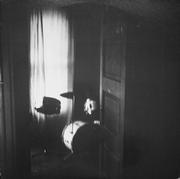
|
Songs
Side 1:
Faceless (2:47) /
Birthday (2:45) /
European Jewel 613 (5:00) /
European Jewel II (3:36) /
European Jewel 501 (5:02);
Side 2:
Message to the Clerk (Part 1) (2:59) /
Message to the Clerk (Part 2) (4:37) /
Branded on a Telephone (3:32) /
Breathtaker (4:27) /
Lonesome Company (2:53) /
Same Road (2:53)
Data Jandek goes electric! Contains three eccentrically
numbered (613, II, 501) versions of “European Jewel” and two versions
of the rock anthem “Message to the Clerk” (refrain: “Take a message to
the clerk/ Tell him not to work”). “Birthday” is a new version of the
same song previously recorded as “Nancy Sings” and “John Plays Drums”.
Review excerpts
- Ira Hankin, Op issue W (May/June 1984). “There is a
change of direction on Jandek’s eighth and latest album. The
heart-splitting inspiration is still ripe in every song; the tasteful
but non-musical acoustic guitar still present, although now over half
the songs also contain hard-hitting non-rhythmic drumming. Also on a
few of the songs Jandek plays electric guitar... With all the racket
of the smashing drums and chordless electric guitar work it is even
harder to understand the vocals...”
- uncredited, Aquarius Records catalog (website), 2002?.
“Regardless of the factuality of who John the drummer is, he is
prominently featured on The Rocks Crumble with a plodding
arrhythmic stumble across the drum kit. Jandek’s guitar strum is an
agitated jangle that meanders near blues based chords, but he breaks
up all the note patterns to keep them from achieving big blues
melodies. Thus Jandek’s guitar with all of its quick tempo and
deconstructed melodies create an anxious haze of half-remembered songs
and phrases.”
- Aaron
Goldberg, web
review for Perfect Sound Forever. “You could call this
Jandek's ‘covers album’, as half of the tracks on this are
covers of his previous work.
It's interesting to note that a lot of his recordings during the
experimental ‘Brown period’ seem to have been made at different times,
so you get quite extreme stylistic and performance jumps from track...
‘Rock’ seems to be the
operative word on this rec, and Jandek writes his closest thing to an
anthem, ‘Message to the Clerk’... Remember this is ‘rock’ on
Jandek's terms, not yours or mine or anyone else on the planet for
that matter.”
|
Corwood 0747
![[album cover]](images/covers/thumb-0747.jpg)
|
Songs
Side 1:
Starless (2:16) /
Hey (3:13) /
Why Did I Change a Word in the Last Song (3:05) /
Waltz in Two-Fourths Time (3:01) /
Call You the Sun (3:18) /
I Ain’t Got None (3:18) /
The Spirit (2:25);
Side 2:
Rifle in the Closet (3:52) /
Sung (1:33) /
Ha Ha (2:15) /
Customary (2:54) /
May 7, 9:15 A.M. (2:54) /
Situations (2:31) /
Couldn’t Be a Reader (2:25) /
Kick (4:00)
Editions The CD was re-reissued in May 2006. A note from
Corwood accompanying the new edition said “0747 remastered 2006,
all previous editions obsolete”. A bar code was added on the
back and the track times are now 9 to 13 seconds longer due to added
silence at the start and end of each track. (I’m not certain
there aren’t other alterations.)
Data Mostly electric. Jandek really cuts loose vocally on “I
Ain’t Got None” (he is quite adamant about not having any
whatsoever). “Hey” has two overdubbed {???} vocal tracks (both Jandek,
I think) and the title is also the lyrics (like the Butthole Surfers
song of the same name — it must be in the air in Texas). The name of
the next song after “Hey” is “Why Did I Change a Word in the Last
Song”. The lyrics of “Rifle in the Closet” have nothing to do with
the title until the very end of the song, which runs, “‘The Rifle in
the Closet’ is just the name of this song.” There is a phone number in
this same song: “The theater’s been dripping/ The movie’s 3-D/ There’s
two rides to Texas/ 547-3668/ Hey John...” “Kick”
is about a junkie and
is played all on one guitar string
(well, maybe two a little towards the end), and mostly
just the same note on that string.
(Compare the beginning of the Velvet Underground’s
“Heroin”.)
Review excerpts
- Pennie Stasick, Op issue Y, pg. 74.
“I loved the way you could almost hear the songs oozing through
the needle and out of the speakers onto the floor... glorious lo-fi
tribalism (a one-person tribe, at that)... May he never
tune his guitar.”
- uncredited, Aquarius Records catalog (website), 2002?.
“Jandek and the drummer ‘John’ (which of course could just be Jandek)
are making a huge freeform mess of spastically hammered percussion,
overblown harmonica solos, and a Jandek who is at the most hyperactive
pole of the manic-depressive spectrum. The album is a collection of
almost tribal, but mostly undefined freak-outs that are much more on
par with The No Neck Blues Band than his signature of pained strum and
whine. Pretty weird even for Jandek’s standards.”
- Brogden, Garry. Vinyl Absolution #20 (October 2002)
(website).
“Jandek sounds like he’s locked in a cellar with some musical
instruments and he’s pissed off about it... There’s
‘drums’ of a sort, though a bit like Mo Tucker, they don’t
so much keep the beat as corral it into a corner and whack it over the
head with a lead pipe; it’s a bored three year old with a wooden spoon
and a tumble dryer. His [guitar] playing — even over all these years
— stubbornly refuses to improve... every so often, you need to be
reminded of the depths of the human psyche, and listening to this
racket affirms that.”
- Aaron
Goldberg, web
review for Perfect Sound Forever.
“Party starts off with Jandek in primal-energy mode, replete with
oonga-boonga drums, his choppy electric guitar and howls — it
almost sounds like Bo Diddley. The first half of the album features
more of a ‘band’ set-up than those preceding... [and] has a very
manic, ferocious, free-form, electrified style... Then,
from ‘The Spirit’ the mood changes back to Jandek's trademark ghostly
solo style.”
|
Corwood 0748
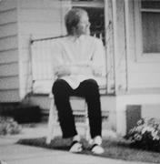
|
Songs
Side 1:
Tell Me When (2:12) /
Left the Beach Last Sunday (2:17) /
Bells and Voices (2:30) /
Faye (2:54) /
Wrong Time (2:23) /
Voices in the Dark (1:56) /
Green Dreams (2:10) /
Blind Cat (2:52);
Side 2:
Georgia East (2:47) /
May 3 (2:47) /
Nine-Thirty (2:42) /
This is a Death Dream (5:04) /
Tumblings (2:36) /
You Didn’t Lie (2:04) /
Oh Jenny (2:07)
Data “Oh Jenny” from Later On
is reprised. A series of songs on side two forms a sort of travelogue
of a trip Jandek took through the American Southeast.
Review excerpts
- Richie Unterberger, OPtion issue D2, pg. ???.
“...with that trademark out-of-tune guitar that owes equal debts to
Texas blues and the background music you hear in a lot of Asian
restaurants... his phrasing is better than ever... I also dug the
lyrical swipes from Jimmy Reed’s ‘Honest I Do’ in ‘Faye’... Even
us fans concede that the same out-of-tune chord he uses 90% of
the time gets a little wearing.”
- uncredited, Aquarius Records catalog (website), 2002?.
“After the raucous squalor of Interstellar Discussion,
[this] is certainly his come-down record. It’s always difficult to
tell how much of the Jandek oeuvre is the result of a psychological
problem and how much is consciously constructed aesthetics. So in
saying that this is a come-down record could be the result of either
or both. Jandek’s voice is hushed, his guitar plucks quieter, and the
drums untouched.”
- Aaron
Goldberg, web
review for Perfect Sound Forever.
“Jandek returns to his lazy-solo-acoustic blues style... though
he might have been listening to more Dylan stuff around this time (or
Tom Petty as he said in his legendary interview from around this
time). ‘Voices in the Dark’ and ‘This Is a Death
Dream’ are two of his most bone-chilling, psychologically
frightening tracks. Album closer ‘Oh Jenny’ is more
sorrowful, suburban blues that ends abruptly like a Monte Hellman
movie.”
|
Corwood 0749
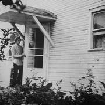
|
Songs
Side 1:
Spanish in Me (5:35) /
Lost Cause (4:31) /
Caper (5:40) /
Uncle Steve (2:28) /
Don’t Be So Mean (2:08) /
Coming Quiet (2:22);
Side 2:
Needs No Sun (3:11) /
Oh No (2:35) /
Some of Your Peace (2:35) /
Put It Away (4:25) /
Ballad of Robert (3:50) /
River to Madrid (4:50)
Cover Jandek enters what seems to be the side door of a
white house. His Oxford shirt is untucked. The photo’s blurry and
it’s hard to tell how old he is or what expression is on his face.
There’s a window on either side of the door. Both are open;
looks like summer. Also, there’s a profusion of plants at the bottom of
the photo, the sort of plants that are allowed to run wild in the
space between two houses). There’s clearly a curtain drawn in the
right window (can’t tell about the left one, Jandek’s standing in
front of it). There are some interesting unidentifiable shapes in
this one: something hanging by the door (maybe a small windchime or
set of bells?), and something, possibly a small ladder, leaning
against the house behind Jandek.
Data “Spanish in Me” and “River to Madrid” reflect Jandek’s
Spanish theme (both) and river theme (the latter).
Review excerpts
-
uncredited, Forced Exposure web site (http://www.forcedexposure.com/),
2002.
“More singing from “Nancy” and beautiful atmosphere permeates all over
the place.”
- uncredited, Aquarius Records catalog (website), 2002?.
“Here, Jandek has figured out a couple of standard blues progressions, but it’s rare to find him actually following any of them. His guitar playing remains an angular proposition, manically stabbing at notes then plaintively bending them. The percussion likewise is an erratic skitter across his drum kit, occasionally keeping time, but usually complementing the guitar splutter and his emotionally cracked voice. “Nancy”... takes up vocal duties on a couple tracks, with her comparatively commanding Patsy Cline / Tammy Wynette voice over Jandek’s instrumentation.”
- Aaron
Goldberg, web
review for Perfect Sound Forever.
“‘Coming Quiet’ finds Jandek trying to do some sort
of surf/noir instrumental, before losing patience and making the whole
thing fall into a frustrated heap. Guest vocalist Nancy returns with
her female touch. She sounds more ‘assertive’ or angry on this album...
‘Ballad of Robert’ is one of the most
unglamorous, accurate, and realistic odes to serious mental illness
ever committed to record...”
|
Corwood 0750
![[album cover]](images/covers/thumb-0750.jpg)
|
Songs
Side 1:
You (1:33) /
One the Planes (2:43) /
Go to Bed (2:44) /
Ace of Diamonds (4:45) /
Twenty-Four (5:07) /
No Slow Ones (3:16) /
Telegraph Melts (4:10);
Side 2:
Governor Rhodes (5:17) /
Star Up in the Sky (3:29) /
You Painted Your Teeth (2:55) /
Mothers Day Card (2:02) /
The Fly (3:35) /
House Up On the Hill (2:14)
Cover Jandek, Nature Boy. He crouches shirtless in a
vegetable garden behind a house that’s mostly obscured by a profusion
of tree foliage. He’s got one hand under his chin as if contemplating
something profound, or perhaps just trying to figure out what to do
about the bugs eating his lettuce. Near the
house two metal garbage cans and a few stairs are visible. The short sections of
decorative white fence along the side of the garden are charming.
Data In “You Painted Your Teeth”, Jandek frenziedly
harangues an unknown second person: “Don’t paint your teeth! You
painted your teeth! DON’T PAINT YOUR TEETH!” The title “Governor
Rhodes” may refer to James A. Rhodes, the Ohio governor who ordered
the National Guard into Kent State; the song itself is a sort of
incantation with Jandek and “Nancy” repeating after each other
“Celebrate our love, celebrate our magic, chant with love, chant
always,” etc., in endless variations.
Review excerpts
- Art Black, Away From the Pulsebeat Winter 1987.
“Jandek lives next door to someone far away, someplace where
‘music’ is an expression of emotion and not a packaged entertainment;
made for self, rather than for an audience... There’s some sorta
feeling trapped in the sound that I like to bask in.”
- Brooke Hinton, Sound Choice #6 (1987). “It sounds
like this: a drummer, a guitarist, and two singers, none of whom have
played or sung before but have a clear idea of what they want to do,
are in someone’s garage banging and moaning and screeching
away... it works, though I can’t figure out why. I get the
impression that part of Jandek’s purpose is to confuse
people. The album is absolutely ridiculous but I can’t stop
listening to it... the muddy, distorted sound quality draws the
listener into Jandek’s very strange world and MAKES him/her try
to understand...”
- uncredited, Aquarius Records catalog (website), 2002?. “While
firmly entrenched in the ‘classic’ Jandek sound of open-chord guitar
pluckery and vocals that teeter on the brink of losing what little
grip of sanity was there, this album stands out for a surprisingly
consistent rhythmic attack on the first six tracks. Jandek hammers at
his abused drumkit with locomotive rigor and intensity rarely heard in
any of the previous recordings; of course, he inevitably loses control
of the rhythm and sends it tumbling down the stairs. The rest of the
tracks are far more loose in the rhythmic structure. Again, the woman
who may be known as Nancy sings on a couple of tracks: one of which
finds her sounding more like Jandek with a strained, atonal
vibrato. Towards the end of the album, there are a couple of tracks in
which a third male voice appears.”
- uncredited, CMJ #92, May 1986. “Since the early
’80s this Houston recluse has been quietly releasing two or
three albums a year of his despairing moans, groans and words of
discontent, all set to a skeletal accompaniment of hesitant guitar,
squeaky harmonica and a muffled drum beat that would do any toddler
with a pot proud. Sometimes he’s joined by a sweet-throated
lady (imagine Melanie trapped in hell) who adds a fresh touch of the
near-normal to ‘Telegraph Melts’ and ‘Governor
Rhodes,’ but Jandek’s upsetting wails on
‘Don’t Paint Your Teeth’ and ‘Mother’s
Day Card’ (from Norman Bates, maybe) are more typical. Jandek is
an acquired taste...”
- Aaron
Goldberg, web
review for Perfect Sound Forever.
“This was the first Jandek album I actually ‘heard’ after
reading about him for so long. Not a good place to start. Listening to
it now, and being a fan, I can appreciate it...
‘Governor Rhodes’ sounds like some weird hippy love-in
crap, with Nancy and what sounds like Jandek or a guy he met down at
the pub, going on about peace and love...
‘You Painted Your Teeth’ remains an utterly LSD/PCP damaged
horror movie nightmare...”
|
Corwood 0751
![[album cover]](images/covers/thumb-0751.jpg)
|
Songs
Side 1:
Honey (3:13) /
What Do You Want to Sing (2:11) /
Jaws of Murmur (4:50) /
Preacher (3:50) /
Didn’t Ask Why (4:10) /
Leave All You Have (3:48);
Side 2:
I Know You Well (3:13) /
Dearly Need Some Words (4:16) /
Straight Thirty Seconds (3:00) /
Bring on Fatima (2:40) /
For Today (3:49) /
Collection (3:41) /
We’re All Through (1:19)
Cover A very young (teenage?) Jandek stands wearing a
somewhat disheveled white Oxford shirt and... a solid body electric
guitar! An important cover, because it shows that Jandek has been
playing music since a relatively early age. He appears to be in a
basement with a very low ceiling, though there’s a window behind him,
curtains halfway drawn, but it could be one of those basement window
well windows. Jandek’s facial expression is blank, perhaps slightly
startled.
Data The alternate male vocalist we’ll call
“Eddie” (see entry for Blue
Corpse) is heard on this record for the first time.
At the beginning of “Bring on Fatima”, a
male voice (Eddie? not Jandek, anyway) says
“Caledonia Mahogany’s elbows”, a quote from the
Frank Zappa song “Call Any Vegetable” (on
Absolutely Free). On the CD reissue, this line is
missing. Some of the other tracks also begin differently on the
reissue: “Didn’t Ask Why” is missing a few seconds
of guitar, “I Know You Well” has a few extra seconds of
guitar, and “Straight Thirty Seconds” is missing a man
laughing. (Perhaps the album was mastered for
CD from the original session tapes with the song beginnings picked out
by ear instead of by comparison to the LP.)
Review excerpts
- Byron Coley, Forced Exposure #12. “A song like
‘For Today’, w/ its sparsely-plunked notes and melancholically
assertive vocals, could almost be an out-take from one of Michael
Hurley’s classic albums on Raccoon... As the soul of individualism is
being destroyed by the forces of evil, Jandek’s flame is an especially
bright beacon in the dark.”
- Lawrence Talbot, Sound Choice #8 (1987) “The solo
numbers with acoustic 12-string and intense vocals are hard to top,
but the drum-guitar duo that starts the first side has its own kind of
ambience that is also priceless. What we have here is a record but
more than that, part of a career that comes to us almost rolled up in
a time capsule. It is about only itself and makes everything else
irrelevant.”
- Art Black, Away From the Pulsebeat #? (1988?).
“The most song-oriented Jandek yet, with genuine rhythms &
strums, percussion so minimal as to be near nonexistent, a rare
second guitar or vocals. Sorta like Phil Spector’s worst nightmare.”
- uncredited, Aquarius Records catalog (website), 2002?. “While the last
couple of recordings demonstrated a celebratory silliness... [this]
exhibits greater tendencies towards introspection and musical
isolation... what is most striking about this album is the genuine
blues stucturalism of the guitar chords. Melody, even if it’s just two
chords rhythmically strummed on an acoustic guitar, has become an
important element in Jandek’s oeuvre. Of course, the songs utter the
mythologically oblique imagery of preachers, time, reality, and nature
— all typical of Jandek’s epistemological inquiries. It’s a cold
world where Jandek lives.”
- Aaron
Goldberg, web
review for Perfect Sound Forever.
“The opening chords of ‘Honey’ represent a kinder, gentler Jandek. The
jangly, tuneful chords almost sounding like an English C86 indie band
before the drums come in and drown out EVERYTHING...
this album points to the beginning of Jandek perfecting a more ‘melodic’
and ‘cohesive’ type of space-blues-folk that can easily appeal to
‘indie’ or ‘pop’ ears.”
|
Corwood 0752
![[album cover]](images/covers/thumb-0752.jpg)
|
Songs
Side 1:
Painted My Teeth (4:47) /
Twelve Minutes Since February 32’nd [sic] (4:28) /
Hand For Harry Idle (3:58) /
Number 512 (3:30) /
Nothing is Better Than God (4:22);
Side 2:
Spiritual Song (4:20) /
Spanish in Me 003 (4:21) /
I Want to Know Why (5:15) /
Simple as That (2:07) /
Open E (3:17) /
Carnival Queen (3:33)
Cover Shirtless Jandek stands by a brick building.
This photo is obviously a pair with the one on the cover of Blue Corpse. Less obvious is that the
area visible in the background, into which Jandek is gazing, is
the garden from the cover of
Telegraph Melts.
Data “Painted My Teeth” is an alternate version of “You
Painted Your Teeth” from Telegraph
Melts. Jandek confesses his Spanish inclinations in
“Spanish in Me 003”. Bit of a religious theme here with “Nothing is
Better Than God” and “Spiritual Song”.
Review excerpts
- Jimmy Johnson, Forced Exposure #12. “It’s tempting
to ‘genericize’ these reviews of Sir Jandek: LP #14, eleven songs,
B&W cover (I think I’m up for another color job), etc., but
there’s enough new excitement here to keep me going for a lifetime.”
- Art Black, Away From the Pulsebeat #? (1988?).
“Almost a comedy album, and certainly a lot fuller, noisier
[than Blue Corpse]. Slow
and desperately filthy rusty percussive beats, electric guitar
played by 2 rats fighting, making up, and fucking on the fretboard,
noisy fuzzyhowl male vocals joined by that anonymous femme
and yet another he-throat in places...”
- uncredited, CMJ #125, August 1987. “By definition,
the most alternative thing one can do is something that very few
people can actually appreciate — the more alternative it is,
the more completely it deviates from the norm. Thus a completely
alternative record would be one which no one ever listened to...
there are records with an ideological base that approaches this
concept of an ‘absolute alternative,’ which are produced
for and of themselves, devoid of any interest in accessibility on even
the most marginal levels... By our reckoning Modern Dances is
Jandek’s twenty-third project, each with its own particular version of
his vocal screeches, screams and groans, plodding percussion,
disjointed guitar and unique song structure; this one features a
mysterious, evocative female guest vocalist, a first for Jandek.”
- uncredited, Aquarius Records catalog (website), 2002?. “This
album showcases two sides to Jandek — the comedically emphatic
avant-blues from the “Jandek band” (with vocal appearances from the
woman known as Nancy and the intrusion of percussive splutter which
may be indicative of a third party) and the solitary arrangements for
Jandek and his guitar. The former is a deliberate slop of off-kilter
blues progressions, the aforementioned arrhythmic drums, and oblique
duets between Jandek and Nancy... If Pussy Galore took themselves
seriously instead of jokingly posturing through ill-tempered blues, it
might have sounded something like this side of Jandek. The latter is
what most people think of Jandek — open chords aimlessly plucked and
strummed while his fragile voice cracks in the construction of a
painfully sad mood.”
- Aaron
Goldberg, web
review for Perfect Sound Forever.
“Jandek tries out different versions of his psycho-classic
‘Painted My Teeth’. Here he duets with Nancy in what
sounds like one of those Rowland S. Howard/Lydia Lunch junky-goth
duets. Nancy appears on a lot of tracks here, the two of them yelling
and hollering and each other, especially on the clanging opus ‘I
Want to Know Why’ in which Nancy and Jandek keep asking each
other ‘why?’ Then its back to one-man mope-mode to balance
things out for the last three tracks...”
|
Corwood 0753
![[album cover]](images/covers/thumb-0753.jpg)
|
Songs
Side 1:
I Passed By the Building (3:44) /
C F (2:07) /
Variant (1:44) /
Part II (1:45) /
Your Other Man (5:36) /
Long Way (0:50) /
Down at the Ball Park (2:14);
Side 2:
Harmonica (5:04) /
House of the Rising Sun (4:34) /
Only Lover (10:48) /
Quinn Boys (1:52) /
One Minute (1:00)
Cover Shirtless Jandek walks by a building. (Lyrics
to first song: “I passed by the building you were working in...”)
Photo is black and white, blurry with motion: a Futurist portrait of
the dynamism of Jandek and a brick wall.
Data All acoustic guitar and vocals except for the closer,
“One Minute”, which is just vocals and drumkit, and
“Harmonica”, which is a harmonica solo for most of its
length, then guitar and wordless vocals join in. “House of the
Rising Sun” is based on the traditional song (the best known
recording is by the Animals). The first three tracks, and the last
one, are sung by a
different male vocalist (who’s also heard on Follow Your Footsteps
and On the Way); Jandek sings the rest.
The guitar styles are different too, suggesting that the two men
changed places. On “Down at the Ball Park” Jandek
is heard saying “take it, Eddie”, so let’s
call him Eddie.
Editions This CD was re-reissued in August 2005. The 2002
and 2005 editions are visually indistinguishable as far as I can see
other than the usual longer track times (see the Editions entries for
Corwoods 0739 and 0740). A note from Corwood accompanying the new
edition said “Newly remastered. All previous editions are
obsolete.”
Comments Jandek goes acoustic again after a long run of
mostly electric LP’s, but this is quite different from the early
acoustic LP’s. The songs are more musically and emotionally
distinct, though this is attained partially through a much more
conventional, strumming-based style on acoustic guitar. (Perhaps
it’s the same, more conventionally adept guitarist
who plays electric on the next album.) For most of the LP, Jandek
adopts a distinct vocal style, higher pitched and more breathy. Nancy
has disappeared, and a lot of the songs are about a breakup.
Did they break up and this LP is the aftermath?
We don’t know, but the sequencing of the albums has always
given me that impression.
Review excerpts
- Art Black, Away From the Pulsebeat #? (1988?).
“Dead minimal Blues, morose & melancholy... with ‘Harmonica’
a sad & lost solo on that instrument for most of its 5 minutes,
before the distant guitar and, well, something else join in.”
- Jane Sears, Reflex 4/1988. “This newer album
contains more folk sounds and less of the dissonance Jandek is so well
known for... Jandek’s angst-ridden vocals... filled with trials and
tribulations...”
- Richie Unterberger, Option, April 1998. “This
ain’t exactly tuneful in the Goffin-King sense... but it is his
most accessible. The trademark disconnected barren landscapes still
flit through his lyrics, and the vocals are still anguished, though in
a soft moaning way rather than the blood-curdling manic half-scream
that he’s also been known to favor. Instead of flailing about
on an untuned guitar, he now sticks almost exclusively to
conventional, non-dissonant chords, usually with a folky strum that
echoes down-home blues and early 70’s acoustic Neil
Young... which is not to say that yer average listener won’t
find this unfathomably demented compared to any other solo acoustic
songwriter album you can name.”
- uncredited, Aquarius Records catalog (website), 2002?. “If there’s a
single Jandek record to own, I would strongly recommend this one...it
stands as a rare moment of clarity within his typically willful
obliteration of blues and folk standards. Blue Corpse
constantly returns to citations of killing time, falling into the
river, and pining for lost love. Jandek’s naturally melancholic wisp
of a voice mopes through each of these songs, presenting itself as an
embodiment of his internal gloom. Of course, these could be
allegorical fictions and metaphoric dramas. Musically, there is also a
considerable change in the Jandek approach [here] as his solo guitar
work is principally acoustic and actually follows recognizably folkish
chord progressions.”
- Aaron
Goldberg, web
review for Perfect Sound Forever.
“Theory has it that Nancy left Jandek for good and this record
was the painful result of that, his ‘breakup’ album. Also,
apparently the singer on the first three songs isn't Jandek, but his
mate Bob from the pub. I still think it's Jandek... ‘Your Other
Man’ finds Jandek doing his finest Dylan
impersonation... ‘Only Lover’ is ten minutes of
echoey-vocals over Jandek on acoustic guitar, improvising whatever's
in his head at the time, it's as good as anything by Skip
Spence.”
|
Corwood 0754
![[album cover]](images/covers/thumb-0754.jpg)
|
Songs
Side 1:
Lavender (3:37) /
Time and Space (7:15) /
The Cat That Walked From Shelbyville (6:23) /
Quinn Boys II (4:00);
Side 2:
The Way That You Act (4:25) /
I Know the Times (3:11) /
When the Telephone Melts (9:09) /
War Dance (4:05)
Cover A young Jandek (pre-recording career, perhaps,
but not nearly as young as the Lost
Cause cover boy or the guitarist on the cover of Follow Your Footsteps) stands, wearing
some stylish Texas-style boots (“You are a cowboy when you wear those
boots”), squinting into the sun, right hand in his pants pocket, left
thumb hooked on his belt, standing in front of an old white
house. There is a broken chair on the front porch, which is somewhat
overgrown with bushes. The shade on the window is up! I think of this
as the “Jandek leaves home” photo. Jandek’s torso obscures enough of
the door and mailbox to hide the house number — the man is nothing if
not careful to cover his trail. He’s looking tall, thin, and
long-legged in this photo.
Data “Quinn Boys II” is a sequel to “Quinn Boys” from Blue Corpse.
“The Cat That Walked From Shelbyville” reprises
“For Today” from
Follow Your Footsteps.
Title of “When the
Telephone Melts” echoes title of the earlier LP Telegraph Melts. Two guitars are heard
almost throughout, whether both belonging to Jandek no one can say.
The back cover lists the wrong zip code: 77020 instead of 77220.
Review excerpts
- Jimmy Johnson, Forced Exposure #14, pg. 96. “A
celebratory exorcism... His most hard-rockin’, conventional
record... The progression of the guitar playing is astounding... It
recalls the savage beauty of Mr. Howling Wolf... A masterpiece.”
- uncredited, Aquarius Records catalog (website), 2002?.
“...surprisingly celebratory in tone... [Jandek] multi-tracks drums
(with a more controlled meandering across a drum kit) and additional
guitars onto the archetypal Jandek sound of his ghostly voice and
avant-blues songs. The points of interest for this album [include]
advanced finger picking techniques which haven’t previously found
their way onto Jandek’s albums...”
- Daniel Marks, web review (full
review). “It’s hard to pick one single album as Jandek’s
best considering the constant change in style, but this is my
favorite. It’s tuneful enough to be tolerable, but not too much that
it isn’t Jandek anymore. This is space-blues-rock at its weirdest...
When this album is taken in comparison to some of the Early Period
stuff, it’s hard to imagine how they could be the same artist. The
songs here sound thought out and possibly rehearsed, but still
spontaneous, like the hoot and holler of ‘War
Dance’. Jandek makes his most accessible album not by abandoning
his basic style but adding into it a more solid interpretation of the
blues. He manages to capture not just the music but the spirit of the
recordings. It sounds like he’s having a lot of fun, and that fun rubs
off on the listener as well... When put in comparison with other
blues-rock albums, it’s a piece of trash, but within the context of
Jandek’s bizarre catalog, You Walk Alone may very well be the best
album you’ve ever heard.”
- Aaron
Goldberg, web
review for Perfect Sound Forever.
“From the beautiful Velvetsy opening chords of
‘Lavender’, it seems that Jandek has turned yet another
creative corner... The oonga-boonga drums are still there, but the
electric guitar playing has improved somewhat, and there's another
player onboard ‘beefing’ up the sound with reasonably
skillful licks and lead runs. In fact some of the garage/lounge room
jams on this record are nearly as good as the Reed/Morrison combo in
their prime... Jandek's idiosyncratic space-blues working in full
effect. In hindsight this ranks as one of the finer indie records of
the '80's full-stop.”
|
Corwood 0755
|
Songs
Side 1:
Wrap It Up (3:04) /
Bring It Back to Seventy-Five (2:29) /
Message to the Clerk (6:46) /
Give It the Name (5:33) /
Ambient Instrument (2:23) /
Sadie (2:20);
Side 2:
I’ll Sit Alone and Think a Lot About You (8:50) /
The Only Way You Can Go (5:28) /
I’m Ready (5:45)
Cover Wins the award for all-time most indistinct
Jandek cover photo thus far, and that’s no small feat. Very dark
interior of a house with the silhouette of a drumkit and some piece of
furniture (or possibly a piano?) only barely visible in the dim light
that filters through the drawn curtain. Photo is in color, not that
you’d notice unless you looked very closely. This is one of those
pictures that the photo lab gives you a refund on.
Data New “Message to the Clerk”, done up as a
pretty straight electric blues. “I’ll Sit Alone and Think
a Lot About You” is over eight minutes and often verges on
inaudibility. There are at least two, perhaps three different male
vocalists on this album: Jandek, “Eddie”, and either Eddie
or a third singer on “Sadie” and “Give It the
Name”.
Review excerpts
- Byron Coley, Forced Exposure #15, pg. 88. “The
most varied and easily-accessed Corwoodian brain-scrambler in a
while... Of course, if you pay close attention you discover that the
central core is as explosively cathartic as any of Jandek’s previous
recs.”
- Glen Thrasher, LowLife #15, pg. 18. “Every Jandek
record is a letter as personal as it is anonymous. Listening to a new
one I get the feeling I should not be listening at all... To study,
analyze, and ponder over these private soundtracks is quite
immoral.”
- Fred Mills, Sound Choice #17 (1992). “...it’s the
timelessness of Jandek’s music; not in the usual sense, but more
in the way each recording seems to interlock,
‘progression’ being a deliberate avoidance of industry-biz
‘growth’ (in terms of finesse, or production, or definable
writing periods). Jandek, the sonic jigsaw architect: the picture
steadily gets bigger, but never in the right direction... Side one is
the rock ’n’roll side this time out...
‘Sadie’ is gutwrenching, sleazy blues that could’ve
been a demo for Exile on Main Street one time long, long
ago. ‘Message to the Clerk’ is Chicago-by-way-of-Delta
honk with some terrific harp blowing and what’s maybe
Jandek’s most forceful (lucid yet drunkenly manic at the same
time) vocals to date — with personally revealing lyrics
involving the doctor, the priest, the boss and even the teeth...
‘Give it the Name’ sounds like Big Brother and the Holding
Company jamming before Janis arrives. Side two, by contrast, is a
total reversal of its raucous counterpart, a quite meditative set for
voice, acoustic guitar and marginal percussion. ‘I’ll Sit Alone
And Think A Lot About You’ is 9 mins. of impenetrability, as painful
for the artist to record as it is for the listener to
decipher...”
- uncredited, Forced Exposure web site (http://www.forcedexposure.com/),
2003. “Features a darkly obscured color photograph of a drum kit barely
illuminated at dusk through a window shade. I’m not sure it really
translates on CD, but in original LP form it rated as one of the more
staggeringly oblique jackets of all time.”
- uncredited, Aquarius Records catalog (website), 2003.
“Pretty abrasive... although it also has
the distinction of being one of the more technically proficient
albums from Jandek. Working clearly with recognizable blues
progressions, Jandek offers a range of expressive (albeit sharply
mangled) guitar solos on top of a rhythm section that actually keeps
relatively normal time. Yet at the same time, Jandek is really aggro,
finding himself on the manic side of the bi-polar equation...”
- Aaron
Goldberg, web
review for Perfect Sound Forever.
“Album opener finds Jandek experimenting in the studio panning
the lyrics hard left and instruments hard right... ‘Message to
the Clerk’ gets the Sonny Terry/Brownie McGee treatment here on
one of the most ‘conventional’ and passionate performances
of his career... Members of Jandek's anonymous musical 'collective'
from either the local pub, church group or Rotary Club seem to have
returned, as the person I call ‘Jeff’ makes a somewhat
drunken and rambling guest vocal on ‘Sadie’. The last
three tracks find Jandek in quite an introspective, mellow
mood... Jandek is well and truly finding his mojo. Whether accidental
or on purpose, that's genius by any motherfucker's standards.”
|
Corwood 0756
|
Songs
Side 1:
Niagra Blues (3:41) /
Janitor’s Dead (3:00) /
Slinky Parade (4:31) /
The Living End (2:17) /
License to Kill (2:32) /
Talk That Talk (6:25);
Side 2:
Start the Band (1:32) /
Girl From America (1:53) /
Embrace the World Outside (2:03) /
In a Hush (2:45) /
Take Me Away With You (6:50) /
Crazy (4:16)
Cover A full-on, close-up, black and white shot of
the man himself, hair uncombed, mouth slightly open, against a plain
white background. Or almost plain white: in some places the
background was clearly cut away, but in other places faint gray
streaks are visible. This is the definitive photo of Jandek, the one
to bring with you when you camp out at the Corwood P.O. box or wander
the streets of Houston looking for him.
Data “Janitor’s Dead” is a sequel to
“The Janitor” from Later
On.
Review excerpts
- Glen Thrasher, LowLife #16, pg. 32. “There is a
special solitary beauty to everything that comes from the Corwood Post
Office Box that nothing else in the entire ‘recording industry’ can
approximate.”
- uncredited, CMJ #211, November 1990. “ ...the
mysterious Jandek has remained the most solitary and impenetrable of
blues travelers, and on The Living End, he’s got dem old
lonesome, downhearted brown-acid blooze again. Most of this album
features the prominent vocal stylings of the mysterious uncredited
female vocalist (Mrs. Jandek?) whose eerie and disembodied presence
has been felt on numerous Jandek projects, but never so thoroughly or
deeply as here. She langours and languishes through metaphysical
duets with the master (flashing back to a young Grace Slick in a
cracked jam at the Airplane House circa `66), as the two partake in a
rambling metaphysical discourse reminiscent of John and Yoko’s spoken
word/groan Plastic Ono collaborations like Two Virgins or
Life With The Lions. There’s plenty of the off-kilter
blues cacophony you’d expect from a good Jandek album —
thunderous, detuned tom-toms and plunky, cracked-neck guitars —
but Jandek seems to be pulling it all with him toward some unknown
spiritual destination, a bit like an avant-garde Van Morrison or a
deconstructed Marvin Gaye. It’s either totally deep or totally
junk, but if he goes to such pains as to include a minuet
(‘Pastimes’), a monastic chant (‘Om’) and a
whole song constructed from plinking those little bits of the strings
down by the guitar’s bridge, he has to have some idea what
he’s doing.”
- uncredited, Forced Exposure web site (http://www.forcedexposure.com/),
2003. “Twelve shorter trackers, dual blues... ‘Nancy’
sings ‘Crazy’, which is the track you’ll put on your
next mix tape.”
- uncredited, Aquarius Records catalog (website), 2002?.
“For a couple of years at the end of the ’80s through the
beginning of the ’90s, the mysterious Texan avant-folk artist Jandek
produced his most polished and refined recordings. Yet at the same
time, these recordings could never be described as anything but
Jandekian. The songs are still led by angular mutations of blues
chord progressions that constantly meander out of tune and
occasionally return to archetypal melodies; however, the production
quality is distinctly balanced. The guitars — which alternate
between electric and acoustic — sit comfortably within the
stereofield, never striving for the nails-on-the-chalkboard abrasion
as heard on previous Jandek albums... The
drums while typically arrhythmic and clunky also politely stand
behind the other instrumentation... comparatively
‘well-adjusted’ and less manic-depressive...”
- Aaron
Goldberg, web
review for Perfect Sound Forever.
“
...an iconic album cover... the man, in genuine ‘anti
hero’ mode — giving you either a totally uncertain or a ‘what
the fuck do you want, motherfucker?’ type look.
The first five songs on the album are basically Jandek and
friend learning how to jam the blues, the same way you probably did
with a Mel Bay book when you were 15. Track six, ‘Talk That Talk’ finds
Jandek's hired-gun guitarist really fanging it, on some bitchin’
electrified blues...
album closer ‘Crazy’ finds our dynamic duo [Jandek and
Nancy] back to their old fractured and cracked sonic tricks, the type
of music you make when its 42 degrees C outside and you've had way too much
beer and pot and crank...”
|
Corwood 0757
|
Songs
Side 1:
Tell Me Who You Are (3:48) /
Come Through With a Smile (5:52) /
I May Not Be Around (2:03) /
Pastimes (3:15) /
Om (2:27) /
Bring It In a Manger (2:17);
Side 2:
Walking Around (2:48) /
Sense of Reason (2:00) /
Remind You (2:32) /
Corner of the Street (2:51) /
Stick With Me (2:42) /
What You Give Me (3:05) /
You Sing a Song (1:33) /
Walking Home (2:03)
Cover Jandek, looking very stylish. If he ever
applies for a job as a model for a JC Penney catalog this photo will
be in his portfolio. His blond, perhaps slightly reddish hair (with
matching eyebrows) is combed back, apparently with the aid of gel or
other hair care product, and he’s got his hands in the pockets of his
sport coat, leaning forward and giving a point a bit to the left of
the camera a sort of quizzical look with piercing blue eyes. He’s
standing in a large field of green grass, the overgrown edge of which
is just visible at the top of the photo.
Data Side 1 features Nancy’s sister Pat, who we first
heard on one song on Chair Beside a Window.
We know her name from a 1982 letter from Corwood quoted in Irwin
Chusid’s book. The letter doesn’t confirm that the singer
on this record is also Pat, but my ears say it is. There’s a
lot of hard stereo separation on this album: lyrics decipherers man
your balance knobs. Note the “Bowery / Beacon Hill” trope
in “Remind You” which was also used in “Quinn
Boys” and “Quinn Boys II”. They’re both
old-time skid rows (in New York and Seattle)... anyone know if always
pairing them like that might come from a specific source? It sounds
repeated from something. Side 2 sounds like it was all recorded
together. The hard stereo separation and the way the instruments
don’t sound like they were recorded in the same acoustic space
suggest that it was assembled by overdubbing. This could be the
session that Corwood referred to in a letter to Irwin Chusid where all
the instruments were overdubbed by the representative himself.
“Remind You” has the rep doing separate vocal tracks in
the left and right channel, and they even overlap at one point, so
that’s definitely overdubbed.
Comments At the beginning of the album when the male singer
says “All right, all right.... alllll right... It’s all
riiiiight....”: it is. It is completely all right. How could
it be any better? On “Remind You”, when Jandek says
“are you serious when you say my name” it sounds like
Dylan to me (mentally I follow it with Dylan’s “Honey I
can’t believe that you’re for real” from “On
the Road”). The a cappella track “Om&rdquo sticks out
because it’s so out of character, and “Bring It In a
Manger”, well, I hardly to know what to say about it.
It’s singular. It’s definitely the best Christmas song
ever, and certainly the only one with the word “genitals”
in it. Though Pat isn’t as strong a singer as her sister,
“Come Through With a Smile” is the track where she makes
the best case for herself. On the same track, I also really like the
way the drums underscore the lead guitar.
Review excerpts
- Steve Erickson, Cut #10,
pg. 28. “As lush as untuned guitars recorded on a 4-track can get
(closer than you think)... Jandek’s muse continues to progress.”
- Glen Thrasher, LowLife #17, pg. ???. “Rounded up
into one big heap, all the Jandek records at once amount to an almost
impenetrable thing... A demanding, invigorating, tragic, visionary
work.”
- Lisa Carver & Bill Callahan, Rollerderby #???.
“LISA: This is one cover that makes me wish we had a stereo. Jandek
looks really creepy with his Scandinavian colorlessness and big bent
back. BILL: I think it’s time for me to slick my hair back and grow
sideburns.”
- uncredited, Forced Exposure web site (http://www.forcedexposure.com/),
2003. “Brightly colored photograph of a well-gelled man is a
favorite in many circles. Musically similar to the Living End
sessions.”
- uncredited, Aquarius Records catalog (website), 2003.
“...doesn’t deviate from the path set by its
predecessor... in polishing his avant-folk/blues songs
into a small subset of relatively tasteful recordings. Yet, this
album is not without its eccentricities and creepy mysteries...
While there are a couple of acoustic guitar numbers, Jandek mostly plays
electric guitar with a signature laziness, allowing all of the
twinkling notes to swim in the spring reverb from his amp.”
- Aaron
Goldberg, web
review for Perfect Sound Forever.
“...suave and sinister...
The ‘Boogie Period’ continues, though on this album he's gone for a
more psychedelic, yet earthy vibe... Bleed. It seems that Nancy's
back, though Seth Tisue reckons it's a new singer, and since there's
no real knowledge of the actual chronology of Jandek's recordings, I
reckon it's Nancy recorded at a later period in time.
The opening three tracks find Nancy taking sole
vocal duties, then there's a quite amateurishly lovely instrumental
‘Pastimes’ before things just go MENTAL...
Nervy playing coupled with Jandek's experimenting with stereo vocals
makes it a challenging and often jarring experience...”
|
Corwood 0758
![[album cover]](images/covers/thumb-0758.jpg)
|
Songs
Side 1:
Yellow Pages (6:57) /
Angel (3:17) /
Show the Man Your Picture (1:51) /
Think About Your Lady (2:41) /
Real Fine Movement (2:36) /
Alehouse Blues (3:10);
Side 2:
Upon the Grandeur (8:27) /
Phoenix (4:43) /
Dreaming Man (3:33) /
Breast in a Moonbeam (2:32) /
Honey (1:20)
Cover Jandek’s from-the-waist-up profile in dark gray
silhouette against a light gray background, mouth open, shirt collar
poking out. In the lower left is the corner of a piece of furniture
(a table?) with a cup or candleholder sitting on it. It looks like
he’s in dense fog, except he’s indoors. Actually, it might be just
his shadow. The cover is remarkably similar to the cover of the much
earlier LP Later On, except that the
earlier cover lacks the fog effect and there’s different stuff on the
table: a glass in one, the top of a bottle (of wine?) and a strange
object I can’t identify in the other. In fact, if you look very
closely, these two photos were definitely taken at the same time,
though from a slightly different angle — there’s an object,
probably a microphone stand, that appears in both shots at the same
height and angle, and his shirt is uncoming untucked in front in the
same way in both.
Data Type on the back cover of the LP release is set in those
cheesy faux-Asian letters you see on the signs on Chinese
restaurants. What can it mean? Byron Coley: “A rumor had
floated around a coupla years ago that there would be only 19 Jandek
LP’s. The essence of the tale was that Jandek had recorded 19
LP’s worth of material during a burst of manic creativity in the
early ’80s...” Well, here’s number 20. Doubt Jandek
not. Electric guitar (sometimes one, sometimes two) and vocals,
no woman singer, no acoustic guitar, drums about a third
of the time. “Yellow Pages” is a kind of cousin to
“European Jewel”. “Alehouse Blues” is a
pretty straight electric blues. “Upon the Grandeur” is
built around a very beautiful winding figure on the guitar; there’s
also a second guitarist and someone thumping along throughout on a
kettle drum (?). (At the end you can hear two male voices
speaking to each other, off-mike: I can’t pick out any words except
when one of them says “What?”)
Review excerpts
- Byron Coley, Forced Exposure #18, pg. 83. “Jandek’s
collected works represent a vast sonic and emotional map that holds an
incredible wealth of treasure...”
- Glen Thrasher, LowLife #17, pg. ???. “A quick
glimpse at the twenty LP’s by this extraordinary Texas original might
lead some people to conclude that he’s some misplaced Borges
character, tirelessly rereleasing the same record over and over,
stubbornly attempting to perfect his art without changing
anything... Yet he constantly redefines his personal vision.”
- uncredited, CMJ #240, June 1991. “
Hey, folks, don’t get so upset about that guy downstairs
moaning, groaning and battering his guitar: that’s jus’
ol’ Mr. Jandek, workin’ it on out. Last year found the
mysterious shaman fidgeting with his formula of confrontational
interstellar blues/folk/rock and poetic psychodrama, presenting a
Jandek in transition, with a tenuous link to previous work, and One
Foot In The North continues this motion, but even a Jandek in flux is
bolder and stronger than most mere mortals. ‘Upon The
Grandeur,’ for instance, could be Jandek’s ‘Stairway
To Heaven,’ with its placid acoustic intro, yet another
interplanetary epic of oblique poetry and lucid guitar
exploration... He’s likeable in his own crooning,
dissonant and eerie way. Influential, oblique and utterly
incomprehensible from first note to last, every passing Jandek album
gives us more clues, which still don’t necessarily make the
picture any clearer.”
- uncredited, Aquarius Records catalog (website), 2003.
“...at the college radio station... in heavy PSA rotation was a
particularly haunting one on schizophrenia. Making the 30 second saga
of this misunderstood teenager even creepier was the backing music
which some smartass at the radio station had grafted onto the
announcement. It was ‘Yellow Pages’ by Jandek. With its
lazy electric guitar meandering through a series of painfully sad
notes and the lyrics ‘You’ve got to help me dear/ Because
there’s no release/ From this tangled beast’ which chimed
in perfectly to the scripted dialogue, the pathos of abject failure
and mental anguish was so perfectly realized, it was comical...
quintessential downer listening.”
- Aaron
Goldberg, web
review for Perfect Sound Forever.
“This album sounds like a bit of a pastiche of out-takes and recordings
from his BLUE and PURPLE periods with a bit of BOOGIE thrown in for
good measure... ‘Upon the
Grandeur’ lives up to its title — eight and a half minutes of
beautiful panoramic balladry, oozing atmosphere, another Jandek
classic...”
|
Corwood 0759
|
Songs
Side 1:
Green and Yellow (4:07) /
Babe I Love You (4:03) /
Cellar (1:39) /
How Many Places (2:54) /
Crack a Smile (2:59) /
God Came Between Us (3:25) /
I Love You Now It’s True (2:50);
Side 2:
The Electric End (19:18)
Cover Color snapshot of head and shoulders of Boy Jandek,
looking about 16 though it’s hard to tell, wearing a plaid shirt
and standing in front of a curtain (apparently Jandek’s liking
for drawn curtains is of long standing). This could be a photo booth
photo (or did color photo booths not exist yet back then?). His hair
is cut conservatively short.
Data “Babe I Love You” is an almost straight pop
song with a lilting rhythm — very untypical! “The Electric
End” is an epic side-long improv jam, with crazed vocals
appearing only near the beginning of eighteen minutes of
instrument-bashing, mostly guitar and drums but also including some
sort of high-pitched whistle (?), played with abandon. This is the
last LP in Jandek’s “middle period”.
Review excerpts
- C. Koon, Yet Another Fanzine,
v3#1, pg. 6. “Back when college radio was FUN, there were two main
camps: those who thought that Jandek was a true genius on the level of
Monk or Adkins, and those who thought that we were just looking for
something so totally obscure, so unlistenable, that we would just
out-hip everybody. It’s ’92... Jandek is still here... And his
detractors, well, they all work for Sony now, don’t they?”
- Jimmy Johnson, Forced Exposure #18, pg. 83. “Side
one has 7 non-datable tracks of depressed blues-destroying
ramble... Early optimism on the opening tracks transmutes into full
desolation by the closing hack-gulps at the end... “The Electric End”
is a nineteen-plus minute excursion into frothful extremes. Piercing
electro-search guitar, revolutionary ultra-primitive drumming,
lost-mind vocalism of real cracked creation and some sort of high end
squeal (a penny whistle?) combine in an incredibly wasted
fashion.”
- uncredited, CMJ #295, July 1992. “If all the mighty
alternative media forces of the nation had real guts, they’d embrace
Jandek into their innermost circle of hipness, and his face along with
the graphic images of Corwood Industries would suddenly become as
commonplace and recognizable among the 120 Minutes set as pierced
noses... Jandek’s released a string of some 20-odd releases over the
years... each a tiny, tormented masterpiece of his own singular and
unparalled genre. This time, it seems like a few new instruments are
added to the equation — we hear what sounds like violins, bats,
car horns, bagpipes, or something amidst the familiar churning drums
and cracked guitar stylings.”
- Aaron
Goldberg, web
review for Perfect Sound Forever.
“The last chapter in Jandek's BOOGIE period... ‘Babe I Love
You’ is a cute, hooky little number that could even be hit (or a
college/indie hit).
‘Crack a Smile’ finds our man playing pretty
competent, mellow strummy guitar, and does his best Tim Buckley
impersonation... Then
things start to change. It seems that Jandek purchased some new
recording equipment as well as a new out-of-tune steel string
guitar [for the rest of side 1]. Album closer ‘The
Electric End’ is Jandek’s version of ‘L.A. Blues’ or ‘Journey Through
the Outer Darkness’ or Coltrane's ‘Om’. Nineteen minutes of atonal,
psychotic BLARE featuring noise, crash, howl, one of those bird
whistles and someone trying to make that weird sound that the 13th
Floor Elevators did on ‘You're Gonna Miss Me’. After 4 minutes, I get
a piercing migraine.”
|
Corwood 0760
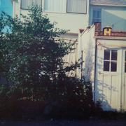
|
Songs
Side 1:
Walking (3:06) /
You’re Not Even Alive (3:35) /
Native Land (3:53) /
Rooftop Sunset (2:18) /
Bedside (2:48) /
Solid Stone (2:41);
Side 2:
Out in the Rain (3:12) /
The Gone Wait (3:23) /
Could Be Anyone (2:56) /
Twelfth Apostle (4:25) /
White Knob (3:17) /
Whiskers (2:13) /
Four by Four (2:50)
Cover After a spate of uncharacteristically revealing album
covers, Jandek hides again. Color photo of the back of a house in
bright daylight. Several windows are visible and the curtains on all
of them are of course drawn tight. There is a brick garage behind the
house with a yellow birdhouse (?) on top of it. It’s
conceivably the same house as on the cover of You Walk Alone; white color and width of
siding match, but there’s no way to be sure. It’s
definitely not the house from Telegraph
Melts though; the garage doesn’t match. The colors
are noticeably more saturated on the CD reissue.
Data “Native Land” includes the line “It’s
not my fault I live in a vault,” which is likely a reference
to the Bob Dylan line “I don’t mean no harm nor put
fault on anyone that lives in a vault&rdquo (from “It’s
Alright Ma (I’m Only Bleeding)”.
Comments The most “pure” Jandek album since Blue Corpse — rock and/or blues
overtones are basically absent. All-acoustic, one guitar only, no
drums, three to four minute songs. A heavyhanded echo effect
surrounds the guitar on some of side two. Mood is thorny,
ambivalent, a little impersonal, serious but not depressed like
Blue Corpse. This is the first
album in Jandek’s “late period”; stylistically,
it resembles the CD’s that follow, not the LP’s that
came before. I think he didn't quite hit his stride in this style
until the next two albums.
Review excerpts
- Byron Coley, Forced Exposure #18, pg. 83. “His
playing, singing, and writing are at a peak here... No one is creating
a body of work w/ more offtrack cohesion and beauty than
Jandek.”
- Aaron
Goldberg, web
review for Perfect Sound Forever.
“The beginning of yet another new creative period...
Finally, most of the album covers are in colour and feature
snapshots of a house, as if Jandek has taken a holiday from his
bedroom to the house next door!
On first impression [this] record was way more mellow than the
stuff on Telegraph Melts but no less atonal...
in many ways the ‘Digital
Age’ finds Jandek asserting himself as a bona-fide master of the
white-boy-lounge-room-Suburban Blues at that point in time. No one
sounded like him, had been as prolific as him, nor had created a body
of work as unique as him. But the zeitgeist at the time was no doubt
squeezing forth artists that had to have heard or admired his chutzpah
of the whole Corwood production line, and were taking notice, enter:
Beck, Royal Trux, Palace Music, Cat Power, Smog, etc. etc. Twelfth
Apostle finds Jandek solo once again implementing a clearer sounding,
yet no less fractured playing style reminiscent of his early albums,
but using more scratch/plucking than the usual arrhythmic
strums. ‘Could Be Anyone’ finds Jandek introducing a slight echo/delay
on the guitar sound to complement the reverb on his voice...”
”
|
Corwood 0761
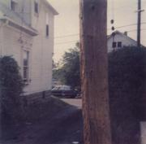
|
Songs
Remain the Same (1:29) /
Helena (2:04) /
Ghost Town by the Sea (3:00) /
A Real Number (2:13) /
Be Going Down (2:07) /
Nothing You Lack (2:03) /
Chilocothe (2:35) /
For You and I (2:48) /
Janky (2:27) /
Lake Lagoon (2:36) /
Phillip Was Mentioned (3:01) /
Closing (2:21) /
Fishing Blues (2:44) /
Going Away My Darling (5:10) /
Going Away (2:13)
Cover Of a piece with the cover of the previous LP. Color
photo,
snapshot quality, taken standing in a driveway looking towards the
street with a white house on the left and a telephone pole in the
foreground. It seems reasonably certain that this photo was taken at
the same time as the Twelfth Apostle
cover photo and from a vantage point only about twenty feet away (from
this, I gather that we are supposed to consider the two albums as a
pair). The two visible bushes (one right next to the house, one
probably in the neighbors’ yard) are somewhat unruly but the
very small portion of Jandek’s lawn that we can see seems to
have been mowed fairly recently. A window on the side of the house is
— surprise! — open a few inches, but the reflection on the
glass makes it impossible to tell whether or not the curtain is
drawn. There’s another white house across the street and a car
that looks like it might date back to the early sixties sitting in the
street in front of it. The house has an old fashioned stone foundation
and the photo generally gives the impression of a slightly run down
neighborhood which hasn’t changed much in the last 30 years or
so. In fact the picture itself could be 30 years old, though the
colors don’t have the feel of an old photo, they’re the
kind of colors produced by a cheap present-day camera. The telephone
pole in the foreground is a visual stand-in for Jandek himself:
silent, anonymous, unmoving, gray-brown.
Editions The CD was out of a print for a couple years before
being reissued in 2003. The front cover on the reissue is the same,
but the type on the back was redone and a bar code added.
Data Short songs on this CD (Jandek’s first venture
into digital media), 15 of them in 40 minutes. Much harmonica and
accordion (both on “Phillip Was Mentioned”). In
“Remains the Same”, Jandek mentions “floating down a
river of tears”, continuing the “floating down a
river” motif from previous LP’s. In “Ghost Town by
the Sea” he mentions “Point Judith” which is the
name of a song on Six and Six;
it’s also a town in Rhode Island. “A Real Number” is
a solo accordion instrumental which incorporates a number of
traditional oompah type figures you associate with the accordion but
played with a rhythmic haltingness which is Jandek’s own —
plus a rather wild little finale. In “For You and I”,
Jandek expresses his belief in the afterlife. “Janky” is a
silly rhyming song like the ones Jandek used to record with Nancy,
mainly consisting of various permutations of “Janky is
clanky”. Maybe Janky is a childhood nickname or a lover’s
nickname, or maybe he just made it up. “Going Away My
Darling” is played on slide guitar. “Chilocothe” is
the name of a former state capital of Ohio; there’s also a
Chilocothe in Missouri.
Review excerpts
- Josh Ronsen, Monk Mink Pink Punk #3, pp. 33–4.
“Jandek’s blues is one of an almost nightmarish intensity of horror
and desperation...”
- Josh Ronsen, N D #19. “A continuation of the
surreal/nightmare blues thing, with acoustic guitar and Jandek’s
sleepy and tortured vocals.”
- Eric Watford, CMJ #407, December 1994. “Since 1978,
Jandek has sent out 23 message-in-a-bottle albums to a mostly uncaring
world to which he is seemingly oblivious. Although it’s a bit
startling to hold a Corwood Industries compact disc, Graven
Image is another perfect, uncompromised opus from this unorthodox
and dogged songwriter. Another blurry photo of his white house graces
the cover of another album of meandering blues-inflected guitar
phrases accompanying cryptic and anguished lyrics. What Jandek’s
music lacks in conventional skill and grace it makes up for in
intimacy and sincerity. His enigmatic blues meditations are a unique
and compelling personal mode of communication. There are, as usual,
little surprises for Jandek aficionados (an accordion solo on ‘A
Real Number’ and a crazy, light-hearted harmonica blues number
called ‘Janky’), but overall he remains remarkably
consistent and true to his original vision, however obscure that
vision might be. On the aptly-titled opening track, ‘Remain The
Same,’ he sings ‘I drive, I don’t know where
I’m driving. I am, I don’t know what it is to be.. You can
just find me floating, sometimes, down rivers of tears...’”
- Aaron
Goldberg, web
review for Perfect Sound Forever.
“Jandek's tales of suburban claustrophobia and banal situations
continue... He obviously seems older, more introspective
and existential if there's an operative word, and his lyrics have that
sort of simple yet poetically suggestive tone...”
|
Corwood 0762
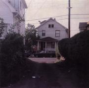
|
Songs
Bitter Tale (2:25) /
Hey Mister Can You Tell Me (3:33) /
Ezekiel (2:49) /
Moon Dance (2:22) /
Flowers on My Shirt (2:36) /
Morning Drum (2:58) /
Down Clown (2:45) /
Rain in Madison (2:19) /
Van Ness Mission (3:03) /
Anticipation (3:12) /
Nancy Knows (3:10) /
Take My Will (4:03) /
Plenty (2:00) /
What (3:06)
Cover Almost identical to Graven
Image. It looks like he stepped about ten feet to one side
— you’re looking down the driveway along the side of the house,
instead of just at the back of the house — and took another photo.
Data Though this says 1994 on the back, to my knowledge
it wasn’t actually available until early 1995. In “Rain in Madison”
Jandek mentions his car — I would have figured him as an “on foot”
kind of guy, or at most an old one-speed bicycle. The echo effect
that first appeared on Twelfth Apostle is used again here;
on tracks 9 and 10 it’s coupled with a stereo ping pong effect
that makes me slightly queasy if I listen on headphones.
Comments I listen to this one the most of any of the
“late” Jandek albums (I would define “late” as
beginning with Twelfth Apostle). It
holds up very well against any of his earlier work. It’s
similar in sound to the last two, but stronger: the songs are more
distinct, assured, and memorable (even without recourse to collaborators
or genre references), and it’s a real peak in the
development of Jandek’s guitar playing (but again, without
referencing conventional styles of music). Check out the solo guitar
instrumental “Nancy Knows”. The just
voice-and-acoustic-guitar setup makes you expect a throwback to his
early LP’s, but everything about the construction of the music
has grown and transformed. Jandek seems alert and focused here, in
distinct contrast to the confused and confusing next few CD’s to
follow.
Review excerpts
- Tommy Tearaway, Outsight web site (http://www.concentric.net/~Hopeorch/outsight/). Joint review of Glad to Get Away
and White Box Requiem.
“He sometimes howls with that lonely pain found on Steven Jesse
Bernstein’s Trigger demos... I give this six washing machines, rusting
away in a back yard.”
- uncredited (Jimmy Johnson?), Forced Exposure web site (http://www.forcedexposure.com/),
1995. “The 2nd Jandek CD, an all-acoustic masterpiece. Haunting,
eternal genius, continued.”
- Eddie Flowers. Quoted at The History of Rock Music, Vol. 4
(website).
“Sixteen years after his first album, Jandek sounds more confident in
his playing, and his vocals are more up front, but his detuned/untuned
acoustic guitar and depressed, stream-of-consciousness folk/blues
songs remain at the core of his music... ‘Rain in Madison’ jumps out,
a cracked blues-style story about... something (‘you know you can’t
bring no electric devices out in the rain’). On ‘Van Ness Mission,’ he
turns up the echo full blast for a disturbing ’delic journey that
continues on ‘Anticipation’ like a free-style Tav Falco goin’ down
slow. ‘Nancy Knows’ is an awkward but complex instrumental that
clearly shows Jandek now moving his left hand around the neck of his
guitar in a way very foreign to his early open-strum approach. I
wonder if the tune is named for the same Nancy who sang on chair
beside a window back in ’82. ‘Take My Will’ is more early blues,
Jandek-style... He pulls out his harmonica for a little dylan-squeal
accompaniment on ‘Plenty’. The cycles of nature are not often rapid;
listen as one of nature’s strangest wonders continues to slowly
‘progress.’”
- Aaron
Goldberg, web
review for Perfect Sound Forever.
“...opens with some plunking in what sounds like Jandek
attempting to learn some Appalachian banjo picking. It doesn't get far
before he delivers one of his most outrageous lines, the horror movie:
‘Hey mister can you tell me, is there a knife stuck in your
face?’ delivered in a purely absurdist style that fits perfectly
with the general absurdist feel of this record. Out of tune
Appalachian banjo-picking and scratch strumming are the order of the
day... and will represent the bulk of Jandek's acoustic guitar
playing style to this day. Travel seems to be on the agenda here as
Jandek tells us about ‘Rain in Madison’ and the ‘Van
Ness Mission’ which is drowned in echo, and makes his detuned
strumming sound kinda rubbery.”
|
Corwood 0763
![[album cover]](images/covers/thumb-0763.jpg)
|
Songs
The Glade (1:23) /
White Box (3:48) /
Second Thoughts (1:40) /
Concrete Steps (3:43) /
Eternal Waltz (4:29) /
Thinking (1:41) /
Part Yesterday (3:02) /
Walking in the Meadow (7:45) /
Evening Sun (2:44) /
Must Have Been a Miracle (2:00) /
Wondering (2:44) /
What Should I Do (1:46) /
Approaching the City (4:27) /
Didn’t Really Die (4:27)
Cover Very grainy enlarged-looking color photo of a
teenage Jandek with outrageous sideburns. This looks to have been
taken at about the same time as the Foreign
Keys cover.
Data Continued use of the echo box.
Comments Glad to Get Away
was really direct and forward looking, an older-but-wiser kind of
record: Jandek’s alone but “glad to get away” and
see things anew. But then this one’s weirdly directionless and
out of sorts — even a little alarming. It’s not like Blue Corpse, which is a record
about sadness, from a perspective at least partially outside
it. Here Jandek sounds confused and uncertain and that’s
directly expressed in the music, which wanders disorientedly, full of
tangents, fragments, and false starts. Bits of lyrics: “I been
a bad case of the second thoughts... Yesterday I could say
it... I’m not able to.... What should I do... Don’t know
if what I did was wrong or right.” Note the last two tracks,
though. The guitar playing gets uncharacteristically worked up on
“Approaching the City”, and then “Didn’t
Really Die”, the closing track has a worked-out,
concluding-statement feel to it that kinda wraps up the loose ends of
the rest of the record. “These are my second thoughts,”
he sings. (The last song is his second thoughts on the rest of the
disc, or the whole disc is his second thoughts about his past...?)
Review excerpts
- Karen Eliot, Bullet Train web site (http://www.galivant.com/~tjustman/bultoc.htm).
“Minimal gritty blues... An acquired taste, but a true eccentric
worthy of some documentation and attention.”
- Frank van den Elzen, Popwatch #8. “It seemed that
after the two 1994 CDs Jandek had buried his guitar for good... Like
his last few, this is an all-acoustic affair. He doesn’t play full
chords a lot this time around and concentrates on his famed
extraterrestrial single-string melodies...”
- Josh Ronsen, Monk Mink Pink Punk #4. “It’s mostly
solo acoustic guitar and less than half the songs have vocals... Title
themes include: Cognition (“Second Thoughts”, “Thinking”, “Wondering”,
“What Should I Do”) and Movement (“Eternal Waltz”, “Walking the Park”,
“Moon Dance” and “Approaching the City”)... I just enjoy the creepy,
bluesy mystery of it all.”
- uncredited, CMJ #490, September 1996. “One...
theory holds that you can hear progress between albums, and that the
aesthetic progression between [Ready for the House] and the
present volume is like the distance from, say, Samuel Beckett’s
early poems to his last prose pieces — a style going from
eccentricity to bizarre purity... The guitar playing this time is
mostly one or two notes at a time, untuned, all at a single tempo,
unconnected by perceptible melody, with reverb that makes it sound
like every note is being played exactly twice. The absolute extremity
of these deathbed blues (near the beginning, Jandek sings that he has
died; at the end, another song explains that he didn’t really
die) suggests either an aesthetic pushed near its ultimate point or
inhuman exhaustion.”
- Eddie Flowers. Quoted at The History of Rock Music, Vol. 4
(website).
“Heavy on instrumentals... Much of the time, Jandek seems to be pondering city life versus a nice trip in the country. ‘Walking in the Meadow’ is an interesting, and delicate, struggle through 7:45 of instrumental blues pickin’. ‘Evening Sun’ and ‘The Glade’ are melancholy memories back home in big-city Houston. ‘Approaching the City’ becomes heart-pounding anxiety... The droney instrumental ‘Eternal Waltz’ seems to be the artist resigned to his own internal world, but on the final track, he lets us know that he ‘Didn’t Really Die’.”
- Gary “Pig” Gold, In Music We Trust #55 (December 2002).
“I’m happy to report his relatively recent conversion to the digital
domain doesn’t seem to have blunted his impact one single byte: his
songs remain as starkly beautiful as a David Lynch opening shot, and
the accompaniment (imagine handing your most ornery nine-year-old
nephew a $29 guitar before locking him for three days in a windowless
basement) remains as brutally poignant as ever.”
- Aaron
Goldberg, web
review for Perfect Sound Forever.
“Jandek is sporting some mean mutton-chops...
The album is drenched in echo on the
guitar, but not so it sounds rubbery. The mood is kinda lethargic, and
very introspective. In fact, I'd call [this] the closest
Jandek's come to a concept album, with doubt and mortality being the
major themes and the white box representing what I think is a
coffin. Songs have a sub-conscious quality about them, most of them
are short and end abruptly, it takes about three or four listens
before it really kicks in, and I'd advise listening with a portable
device... killer... sublime... Jandek's best album of the 90’s.”
|
Corwood 0764
![[album cover]](images/covers/thumb-0764.jpg)
|
Songs
First Awake Moment (2:26) /
Alone on That Mountain (3:53) /
I Can Not (4:03) /
Get Back Inside (3:00) /
Long Long (3:47) /
Joab (2:40) /
Equaled in Life (2:16) /
Star of Zenith (3:55) /
Take It Easy (2:09) /
Just Die (3:53) /
Pending Doom (1:15) /
Sleepless Night (2:22) /
Today (1:26)
Comments Confounding. Who’s the ringer male vocalist who
recites most of the songs deadpan, other times sounds like he’s doing
a Jandek imitation? Why is the guitar, and sometimes the vocals too,
practically smothered in science-fiction echo half the time? Didn’t
Jandek stop doing goofy sing-song rhyming blues pieces like “Long
Long” years ago? Why is there a drumkit on “Joab” and “Long Long”, a
move not repeated before or since in the Corwood CD era? What’s with
the fast strumming on “I Can Not” — is Jandek into skiffle now? Is
that a hand drum on the chanted cut “Pending Doom”, or just a bucket
or something? Does Jandek call the other vocalist “Mike” at 0:17 in
“Today? What is the religious message at the end of “Today” doing in
a track that’s mostly a bunch of mumbling and joking around? Is
“Mike” a friend of Jandek’s from church? Just when Jandek’s oeuvre
starts to make sense to you, something like this comes along...
Review excerpts
- Josh Ronsen, N D
#21. “Perhaps the strangest Jandek on digital format to date...
Jandek usually sounds guilty to me, but of what I can’t fathom.
Maybe something is hidden under the seat cushions on the couch
that adorns the cover. Not for those who faint at exposure to
(rubbed) raw spirit.”
- Fred Mills, Magnet #31. “More existential twang,
strum, holler, and moan. Of course, a shylock like Will Oldham gets
laid a lot when he pulls this trick, so it’s patently unfair that
Texas recluse Jandek doesn’t get those same dumpy groupies.”
- Eddie Flowers. Quoted at The History of Rock Music, Vol. 4
(website).
“This is a peculiar and special disc from Jandek, upbeat and focused
on his harmonica playing! His experiments with higher guitar tunings
also continue, which contrasts nicely with his voice which age has
lowered... the voice is no longer the fragile young man of the early
1980s. Jandek is still seemingly disconnected from the so-called
real-world, but now he at least seems comfortable in front of his tape
recorder. ‘Get Back Inside’ is a surprising duet for harmonica and
what sounds like pump organ playing a cowboy semi-polka ’round the
campfire... ‘Impending Doom’: a bit of drum-kit rattle works as a
short intro before Jandek breaks into a chanted vocal while beating
insistently on a conga or bongo drum (just one). ‘Today’... ends
abruptly with the declaration: ‘God is now alive in the world today.’
Has Jandek been ‘saved’; ‘woke up’?”
- Gary “Pig” Gold, In Music We Trust #55 (December 2002).
“Houston’s best-kept musical secret pulls out his trusty harmonica and
confronts, tackles, and ultimately leaves for dead the entire damnable
singer/songwriter idiom... “Alone On That Mountain,” the second song
on this characteristically disturbing disc, begins a seven-song suite
of horrific music-making which concludes with the suspectfully healthy
advice, “Take It Easy.” Yeah, right... I Woke Up is but
another installment in an on-going body of work absolutely without
equal in the Uneasy Listening annals.”
- Aaron
Goldberg, web
review for Perfect Sound Forever.
“If any record represents the ‘postcards from the depths
of a suburban wasteland’ period, then [this] is it. It seems
that there is a guest vocalist on the album, some ‘bloke’
with a deadpan voice who could be an institutionalized
beatnik... There's lots of jagged harmonica and that annoying
piano-accordion. Delayed guitars, more bizarre deadpan vocals by
‘the bloke.&rsquo... so fucked up as to be ridiculous,
but... not without... charms.”
|
Corwood 0765
![[album cover]](images/covers/thumb-0765.jpg)
|
Songs
New Town (4:14) /
Steal Away Home (4:31) /
Street Walk (3:45) /
You Standing There (3:27) /
Desert Voice (4:36) /
Let Me Hear the Words You Say (3:24) /
The Real You (2:27) /
It Would Only Be Action (4:10) /
Look At It (3:36) /
Time Will Come (2:50) /
What You Are (3:46)
Cover Nice clear color photo of the same drumkit that has
graced previous covers. It looks to me like an old photo, not a
current one, perhaps from the same roll of film as the cover of Interstellar Discussion — even the chair
is the same. I think he accidentally put a white bedsheet in the
laundry with a red shirt: behold, curtains! (Drawn of course.)
Comments This one hasn’t much caught my ear yet.
Perhaps further listening will increase my appreciation, but I wonder
if the style Jandek has been exploring since 1993’s was just
yielding diminishing returns by this point. If Jandek himself felt so
too, that might explain the casting around for new directions on the
album before this one and the two after. Note also the lyrics to
“What You Are”, which find Jandek in a mood of questioning
and reconsidering his life, art, and audience.
Review excerpts
-
uncredited, Forced Exposure web site (http://www.forcedexposure.com/),
1998.
“It features our man in acoustic mode, harshly stroking his guitar in
a manner that suggests not penny of investment has been proposed
towards technical advancement. The live-room, hiss-relevant recording
quality is still omnipresent and if you were feeling good about your
contemporary fortune it’s quite possibly that this album holds wordage
of universal truth. Once again.”
- Eddie Flowers. Quoted at The History of Rock Music, Vol. 4
(website).
“...in his ‘usual’ style, although the lyrics now seem more personal
than simply depressed. A couple of exceptions to the vibe this time:
the jagged instrumental ‘Street Walk’, and what sounds like Jandek
pounding on the back of his guitar while singing and playing harmonica
on ‘Time Will Come’.”
- Aaron
Goldberg, web
review for Perfect Sound Forever.
“Interesting to note the amount of ambient hiss on this record
compared to most of his ’90’s output. While there really isn't
anything new going on here, there are some nice moments...”
|
Corwood 0766
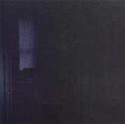
|
Songs
It’s February (2:04) /
You Standing There (3:05) /
I Never Left You Anyway (4:00) /
Moving Slow (3:58) /
Falling Down Deep (4:32) /
Lonesome Bridge (4:00) /
A Dozen Drops (6:17) /
The Beginning (15:29)
Cover Another really dark photo of a drumkit in a room with
drawn curtains, very much like the cover of On the
Way — could easily be from the same roll of film.
Data “You Standing There” is another version of a
song from New Town. The
last track is a solo piano performance (no vocals) on an almost
confrontationally out-of-tune piano.
Review excerpts
- Eddie Flowers. Quoted at The History of Rock Music, Vol. 4
(website).
“Yet another start for Jandek... ‘Hello,’ he sings, ‘it’s February.’
For the title tune, Jandek spends fifteen and a half minutes alone on
piano! No vocals either. His hammering chords at the high end of the
keyboard sometimes sound close to his hard-strum guitar, but the more
melodic moments, especially the lower notes, are new sounds for this
artist. By virtue of the instrument, Jandek sounds more ‘in tune’ than
usual, but listen for those passages where he combines chords to
somehow create bell-like sounds, or the high-end ‘crazy’ freak-out
stuff that he uses very sparingly. The overall mood of the piece is
somber, ‘classical’ in a broad stylistic sense, with free-style
flourishes that are maybe unconscious. Pretty great.”
- Aaron
Goldberg, web
review for Perfect Sound Forever.
“...a fine return to the 'pure' Jandek sounds of Six and
Six, the production is murky, vocals thick with reverb and the
guitars plunk and strut along in a bluesy swagger...
the biggest farewell to the 21st century comes with his
reality-twisting-Black Hole that is the title track. A fifteen minute
dirge on a new instrument — the piano — that sounds like the first
thrill you got when you played a piano as a kid and you thought you
could play flashy all over the keyboard like Johnny Johnson or Jerry
Lee Lewis or Liberace. Jandek actually plays the piano with the same
manic gusto that he plays guitar, occasionally bashing it,
occasionally finding moments of beauty. It reminds me a bit of Sun Ra's
playing on ‘Gods on Safari’... ”
|
Corwood 0767
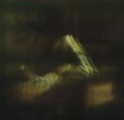
|
Songs
I Need Your Life (28:43) /
It’s Your House (22:14) /
I Went Outside (1:17)
Cover It’s very dark and murky, but: I see a figure,
presumably Jandek, in white shirtsleeves, seated, with his forearms
crossed, leaning forward and resting his elbows on his knees. He
appears to be wearing a black hat with a brim, and those are probably
stairs in the background. He’s brooding.
Data No instruments, just Jandek on solo voice, believe it or
not!
Comments Since Twelfth
Apostle (1993) Jandek’s mostly been playing his
emotional cards closer to his chest — in withdrawing from
working with other musicians, his tone has become more distanced and
oblique. But then this dramatic reversal — “I Need Your
Life” in particular is naked and desperate. You feel that you
shouldn’t listen, or can’t. I haven’t dared to play
it a second time yet.
Review excerpts
-
uncredited, Forced Exposure web site (http://www.forcedexposure.com/),
2001.
“It’s certainly a head-scratcher. No guitar, no drums, no piano, just
him rambling on for a small eternity in a sort of song/speech mode...
all of it sounding kind of like it was recorded though a 15 watt
Peavey Bandit amp with a broken reverb spring and a noise-gate
pedal. Eerie (some might say annoying or god awful), almost bluesy
hiss bathed vocals are separated by some rather lengthy periods of
complete silence, covering some of the places and ‘feelings’ that
populate his other records so vividly. Reading into it a bit (for in
this place everything means something), we see that his last record
ended with ‘The Beginning’ (!) — a 15+ vocal-less (!) piano
‘meditation’ which certainly clouded the waters when it dropped —
which can now be viewed as an intro to this new acapella
recording...you get the idea. So then, as concrete poetry it’s not so
hot, and as some kind of Out Blues piece, it’s actually rather dire,
but viewed in the microscope of the Jandekian Canon, it’s pretty
massive, and that’s saying something too.”
- Eddie Flowers. Quoted at The History of Rock Music, Vol. 4
(website). “A
startling album of stark-naked music from the man who has been trying
to bare all since he started recording in the late 1970s. Using only
his voice, Jandek literally begs for understanding for nearly 29
minutes on “I Need Your Life”. He’s never sounded so Texan, or so
completely immersed in the kind of ultra-personal blues music that
existed before the 1930s. In this acapella setting, his emotions run
free, and he speaks from painfully deep places... Jandek puts on his
shoes for the last song, “I Went Outside,” but once out there, he
finds only snow and ice. His venture into the outside world ends
abruptly after only a minute-seventeen. If you’ve ever followed
Jandek’s uncomfortable journey into his own head, this is essential
listening.”
- uncredited, Aquarius Records catalog (website), 2002?.
“Very disturbing, and not in a good way.”
- Aaron
Goldberg, web
review for Perfect Sound Forever.
“Jandek is going through his abstract expressionist stage. Sure
it's acapella, though it seems that Jandek has edited chunks of vocals
in a Burroughsian lyrical cut-up style. It's hard listening,
considering there's only 3 tracks and two of them go for over 20
minutes. But the most interesting thing to note is the fact that the
voice has changed. Obviously there was a long break in recording —
maybe for the whole '90's? — but here Jandek sounds like a guy who's
at least in his late '40's, compared to the 20-30 something that
appeared on nearly all his previous recordings.”
|
Corwood 0768
|
Songs
One Last Chance (29:21) /
Killer Cats in the Caribbean (3:05) /
Yes You Are (2:44) /
The Name I Had (3:30) /
I Need To Be (2:03) /
Pieces of Place (3:29) /
Never Never Never (1:05) /
Just Like the Floor (2:20) /
Ten O’Clock Shadows (2:48) /
Come Over Here (1:06) /
Frosted Field (1:02) /
I Knew About Them (3:34)
Cover Faded color photo of a young Jandek standing
posed in front of an interior doorway and smiling at the camera. (Yes,
smiling!) How young is very hard to tell.
Comments Another all solo voice CD.
Review excerpts
-
uncredited, Forced Exposure web site (http://www.forcedexposure.com/),
2001.
“I have no idea what to say.”
- George Parsons, Dream
Magazine #3. “Opening with ‘One Last Chance’
which is just a few seconds shy of half an hour, and features the voice
of Jandek giving chilling sing-songy readings to his thoughts, with
no musical accompaniment. He pleads to god, the void or just himself,
for the titular subject matter. The sound of someone at the end
of their rope; and not that much different from anyone else in such
a situation; but such hopeless circles of thought are seldom uttered
out loud, let alone, recorded. Looking at himself in detached
judgment and not liking what he sees. The cumulative effect is
grueling and mesmerizing. The remaining eleven tracks are much
shorter and range from poems to songs and something very like
prayers... ‘I Need To Be’ is actually quite poppy,
and has a memorable melody line, though it’s broken up by
the stop/start nature of his recording method. The single strongest
track may well be ‘Just Like the Floor’, which is like a
concise poetic sensory psychodrama.”
- uncredited, Aquarius Records catalog (website), 2002?.
“These two a capella albums debunk the myth that Jandek recorded all
of his albums during an excessively manic period of his life, as the
voice which utters and lolligags through the stream of consciousness
verbage has clearly aged from the wispy juvenile voice found on Ready For The House to hold a
more grizzled delivery that is eerily similar to Charles Manson.”
- Nick Phillips. “Mystery White Boy”, City Pages,
Vol. 22, #1087 (10/3/2001).
“So are these new albums any good? Well, good and bad are strange
terms to be using in relation to Jandek records. But listening to
them, I can’t help being a little disappointed. Lyrically they seem
weak — sadly obsessive, with none of the traumatic imagery that made
his earlier work so arresting. This Narrow Road’s
29-minute opener is perhaps the nadir: a stream-of-consciousness rant
that sucks all the complexity out of the Jandek myth. The song chooses
instead to play the scary-weirdo card: ‘Let them die, they all
deserve, let them die/ It ain’t like killing/ It’s annihilation,
extermination, elimination/ Eliminate the bad.’ Yet part of me
wonders whether my complaints have anything to do with these new
albums — if, in fact, my incompatibility with Jandek is not his fault
but my own. I’ve escaped the mess of suburban sprawl and retreated to
the happy calm of the countryside. My head no longer cluttered, I
don’t find Jandek’s current pathology illuminating: unmasked, it
suddenly sounds single-minded and, well, pathetic. Maybe, with my
newfound contentment, I’m no longer able to access the depths of
feeling concealed within Jandek’s music. That, even more than his
music, would be truly terrifying.”
- Aaron
Goldberg, web
review for Perfect Sound Forever.
“...continues the cut-up vocal trend, the pieces are shorter,
and come off more like vocal ballads...”
Other commentary
- Thomas Nondorf, in E-mail. “[Nick Phillips’]
review... is almost intentionally misleading. It says Jandek plays the
‘scary weirdo card’ and quotes lines from ‘One Last
Chance’ out of context. A simple look at the lyrics shows J is
talking about killing the bad things in his life that are bringing him
down, not going on a killing spree or something.” [Note: I
agree. — ST]
|
Corwood 0769
![[album cover]](images/covers/thumb-0769.jpg)
|
Songs
The Clothes (1:09) /
In the Cave (5:53) /
Out of the Cave (4:34) /
Stopped (2:14) /
Interlude (1:57) /
The Dunes (1:29) /
Aimless Breeze (2:00) /
You Wake Up Deadmen (3:30) /
Worthless Recluse (17:10) /
Lofty Rider (1:25) /
The Stars Spell Your Name (2:17) /
Your Turn (1:31) /
You Won’t Get Up (1:12)
Cover Teenage Jandek stands in a barnyard. His hair
is cropped short; the photo looks roughly contemporaneous with the Lost Cause cover photo. Bales of hay are
stacked in the barn and a cat is emerging from the barn door.
Jandek’s wearing a gray cardigan sweater and the lapel points of his
white shirt are sticking out. His hands are in his pockets. I’m
guessing from the setting and from the relatively formal clothes that
this photo might have been taken during a holiday visit to a farmer
relative.
Comments Another all solo voice CD.
Review excerpts
- George Parsons, Dream
Magazine #3. “Once upon a time we had a few phone
conversations that were as honest and uncompromised as any of his
recordings; it’s a shame that he shuns the public eye... but
it’s also good to say nothing as well... So he ends up being
the work, which is maybe all any artist really should be after all...
These pieces are part spoken word, part musicless song, but the
musical pauses are there... It becomes a dialogue of this guy with
himself, even if the songs may be directed outward like letters to
loved and hated friends, they are all multifaceted grey mirrors of
this solitary soul. There is no shame or cornabll acting antics in
his readings, he sounds true and transcendentally human, fractured and
flawed. I wish I could say I didn’t relate to this as much as I
do...”
- uncredited, Aquarius Records catalog (website), 2002?.
“Unfortunately fulfills the self-effacing title, as the Texan hermit
offers his third album of a capella ‘songs’ and poetic readings. As
difficult as they may have been to listen to, his arrangements for
questionably competent guitar picking and stumbling drums are sorely
missed. While these a capella albums are at the bottom of the Jandek
catalogue, he has been mucking about with his 4 track giving a few
interesting ‘effects’ upon his voice. But that’s all...”
- Aaron
Goldberg, web
review for Perfect Sound Forever.
“...does away with any tunefulness and goes for straight ahead
spoken word inter-galactic beat poetry... Why this hasn't been
taken more seriously by the spoken-words/poetry scene as a major work
is a travesty of the highest order.”
|
Corwood 0770
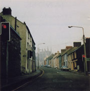
|
Songs
Blues Turned Black (12:14) /
It Seems Forever (7:39) /
I Threw You Away (8:10) /
Frozen Beauty (11:50) /
The World Stops (9:01)
Cover A deserted residential city street in Europe on
an overcast day. Members of the Jandek list have identified the
building at the end of the street as The Cathedral of St. Mary and
St. Anne in Cork City, Ireland. The street is probably Roman
Street, and the road sign may read “Luimneach/LIMERICK” and “An
Bhlarna/BLARNEY”. The style of license plate on the cars indicates
that the photo was probably taken in the late 80’s or earlier.
Comments Yet another new beginning for Jandek. This returns
to the familiar format of voice and acoustic guitar (plus a few
minutes of harmonica), but in a new, distinct, and compelling style.
It sounds a little like a cross between Six and
Six (1981) and Blue Corpse
(1987) — at least, it reminds me more of those two albums than
of the more recent solo acoustic discs. Hoping it doesn’t put
too much weight on the comparison, I will expand. It’s as bleak
as either of them, and as difficult as the earlier, but like the later
album the guitar is mostly strummed not picked and the songs are
longer and more developed instead of starting up and shutting down
abruptly. It definitely sounds like Jandek strumming, though, and not
like the more “talented”, conventional guitarist on
Blue Corpse. On vocals, Jandek does a lot of that thing
where he makes his voice go way up high, pitches sliding everywhere,
“crooning” if you will, which I associate with the singing
on Blue Corpse (even though there it was a different
singer!). Overall, it’s more open emotionally than most of his
discs from the CD era, not counting some long let-it-all-hang-out
stretches on the spoken word discs; the music’s mood creeps over
you like cold fog. Best Jandek disc since Glad to
Get Away?
Review excerpts
-
uncredited, Forced Exposure web site (http://www.forcedexposure.com/),
2001.
“A return to form album... on this album, the Blues turn Black.”
- uncredited, Aquarius Records catalog (website), 2002.
“Jandek preceded I Threw You Away with three a capella /
spoken word albums that were ultimately forgettable detours from his
signature sound of damaged folk music. Here, the Texan mystery man has
returned to the open chord guitar strum and meandering finger picking
techniques while he unleashes that desolate moan of a voice revealing
staggering visions of any number of inescapable existential
truths. Musically, I Threw You Away is a very obtuse
(even for Jandek!) maze of untuned acoustic dissonance and emotional
caterwauling.”
- Byron Coley, Signal To
Noise, Winter 2003. “...a cracked masterpiece of
cat-scratch-acoustic-guitar and blue-tongued howling. The opening
cut, a 12 minute-plus dirge entitled ‘Blues Turned Black’
(akin to a one man recreation of Patty Waters’ live version of
‘Black is the Color’) sets the mood. As the guitar
scrabbles around the edges of its self-defined cell-of-meat, the
vocals release gusts of heart-borne anguish that are wildly articulate
without approaching vocal/lyrical specificity. If you give yourself
over to it, this piece will haul you down into the depths of the well
of despond more artfully, more fully, then ’most anything else
imaginable. It’s like mainlining grief. The three shorter
pieces traverse parallel tracks. They visit the butcher shop of the
soul, walk through a graveyard of living flowers, and stare at the
remains of an abandoned basement, while the acoustic strings bleed
detuned open chord note-drops, and a harmonica rises out of an
animal’s forgotten corpse. The other long track, ‘Frozen
Beauty’, is a meditation on the semiotic distance between
reality-itself and the image of reality, power-moaned through a
cascade of circular guitar figures. It is the piece here that is
perhaps most reminiscent of Jandek’s early recordings, as sad as
a pillowcase full of photographs of dead lovers. But for all of its
dolor, it seems to me that I Threw You Away (a repeating lyric
motif that first occurs in ‘It Seems Forever’) represents
a new beginning for Jandek, following the utter hermetic desolation of
the three last albums. For we who love this guy’s material and
its coding and the sense it gives of creating its own portable
cloister, such a reinstatement of relative pop construction is
welcome. Jandek’s music is so enigmatic that it often seems to
be as much the creation of the listener as the player. So when he
himself appears to be trapped beyond the boundaries of
despair-as-we-know-it, serious listeners can also find themselves
transported beyond the reach of salvation. And that’s not
always good, but it is perhaps a key to understanding the
splendid interior corridors that Jandek alone seems capable of
accessing...”
- Aaron
Goldberg, web
review for Perfect Sound Forever.
“The death rattle guitar from Ready for the House
kicks-off proceedings for about 40 seconds, before Jandek... starts to
HOOOOWWWWLLL and MOOOOAAANNNN lyrics about loss, death and any other
negativity. Tracks are long with none under 7 minutes that frequently
blur into long dirges. The album title speaks for itself, and you
might just do the same to it.”
|
Corwood 0771
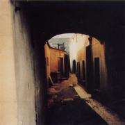
|
Songs
The Humility of Pain (7:21) /
Work of Art (4:46) /
I Stepped Out of It (5:33) /
I Want to Look In (6:38) /
I Can’t Leave a Clue (4:43) /
Share My Life (6:45) /
You Know You Need (5:38)
Cover Second vacation snapshot in a row. This one’s
an alley: dark, cramped, and crooked. Ireland again?
Comments Still listening, but initially it sounds similar
to the last one. They definitely are a pair that stand apart from the
others. But: shorter (though still long-ish) songs, no harmonica this
time, and the guitar is more jangly and dissonant, lots of clashing
ringing high frequencies. It’s lower on the lulling melancholy,
higher on the in-your-face suffering. In the vocals Jandek will draw
out the last word of a line into a long wounded moan, letting the
pitch of his voice wander up and down, hitting all the most
pained-sounding cracks between the notes, pulling the listener into
his head with him. Other times he pushes the listener away again with
lyrics delivered in a lazy sarcastic you-wouldn’t-understand drawl.
This one hurts you as much as it hurt Jandek.
Review excerpts
- Aaron
Goldberg, web
review for Perfect Sound Forever.
“This album continues from I Threw You Away. Not much new
going on here, though Jandek is starting to sound like a really drunk
hobo.”
|
Corwood 0772
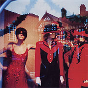
|
Songs
The Picture (9:25) /
The Place (7:03) /
The Highway (6:28) /
The Answer (4:31) /
The Stumble (8:55)
Cover The building on the left, reflected in a shop window, is identifiable by
comparison with other photographs as the Odeon Theatre in Chester, England.
Another vacation snapshot, apparently.
Jason Cooley points out that the mannequins in the window display
“are the only other human
figures” ever to show up on a Jandek album cover, in fact,
“the only other living creature to ever appear was the cat on Worthless Recluse”.
Review excerpts
- Aaron
Goldberg, web
review for Perfect Sound Forever.
“I don't mind this record, it's another concept album. Jandek
introduces a bit of harmonica and experiments with his vocals which at
times sound ‘sultry’... Then, he tries to sound like some
sort of Irishman. Highlights are ‘The Highway’ with its
chilling psycho-noir ambience, and ‘The Answer’ which has
a middle 8.6675432321 that sounds like early, damaged Sonic
Youth.”
|
Corwood 0773
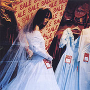
|
Songs
I Went to Hell (6:39) /
I See the Open Door (6:04) /
I Was a King (10:24) /
I Just Might Go Now (10:27) /
I Found the Right Chance (6:00)
Data Vocals and... bass! (I had thought it was upright bass,
but an experienced bass player tells me it sounds like fretless
electric bass guitar to him. This is plausible given that Jandek
played a fretless electric guitar onstage in Brooklyn in 2005.)
Comments The bass suits him. The low sounds are like a cool
bath after the harsh high end of the last few.
Cover More mannequins in another shop window. There are no
identifiable reflected buildings in this one.
Data “The Gone Wait” was the name of a song
on Twelfth Apostle.
Review excerpts
- Aaron
Goldberg, web
review for Perfect Sound Forever.
“Another musical chapter begin, as Jandek puts down the guitar
and picks up a bass. It's always interesting to note that each new
instrument Jandek picks up sounds like not only is he playing it for
the first time, but more importantly, discovering the SONIC
POSSIBILITIES of the instrument in a totally fresh light. The bass
playing here is totally detuned, and sounds like it's probably a
fretless electric. It might sound like Mingus, and it might sound like
Fernando Saunders if he wasn't so... happy. Jandek plunks the bass
much like he does the guitar, often playing double notes, but not in
the way Peter Hook does it. He moans, though in a more sedate manner,
giving the record a very downbeat, narcotic jazz feel.”
|
Corwood 0774
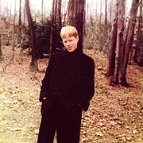
|
Songs
Shadow of Leaves (29:02) /
Find Me Again (6:15) /
I Give You Me (5:04)
Cover Jandek posed at the edge of a forest, in a not very
outdoorsy all-black Johnny Cash outfit that’s too big for him.
He’s smiling, squinting into the sun a little, hands in his
pockets. The picture-taker puts the camera away and they continue
strolling together through the trees. But are they alone? Pierre
Sandgren was the first to notice that the picture has been altered
using Photoshop or similar software. Scandal!! Some of the trees
along the top are duplicates of each other, and the photo appears to
have been doctored in other places as well, for example around the
figure’s legs at the bottom edge and around the left shoulder (his
left, our right). Even the head has a certain pasted-on look that
could be the result of manipulation. Was there originally more
than one person in this photograph?
Comments Jandek plays bass again, claims to “no longer
exist,” sings about drinking “mechanically produced
beverages,” and announces plans to “think about
breathing.” Recently he took a walk. The music seems improvised
but is satisfyingly varied and tracks the varying moods of the vocals
closely. During the long piece, moments of abjection or desperation
occur, but they pass; mostly the voice we hear is lucid.
He’s leveling with us. When he sings “I won’t drive
my car for the rest of the day,” it’s a fact. The most
harrowing moment comes during the last track, a love song that turns
threatening: “please take my bait... I want to eat you
up... you’ll never get away, you won’t want to... you
don’t have a life, you live in me.” The music plunges down
to the bottom of the bass’s range, but by the last line, the
point of view has pulled back again to encompass “the grand
scheme of things.”
Review excerpts
- Aaron
Goldberg, web
review for Perfect Sound Forever.
“...opening number... is a 29 minute opus of sloth like
proportions as his bass waddles along aimlessly with the
vocals. Closer ‘I Give You Me’ has Jandek momentarily
trying to pop the strings like Doug Wimbish, before he delivers those
sort of ‘you're a loser and I'm going to fuck with your
head’ type lyrics that Lydia Lunch and Henry Rollins made
careers out of.”
|
Corwood 0775
![[album cover]](images/covers/thumb-0775.jpg)
|
Songs
One of Those Moments (20:15) /
I Hadn’t Been There Before (5:49) /
They Don’t Matter At All (5:36) /
I Met You (8:12)
Cover A head shot of Jandek in profile, in formal wear, blank
expression, eyes downcast, tension in his jaw. From the sharply
defined shadow on the wall he’s standing next to it’s a
flash photo. Probably this is a small section of a larger photo.
Maybe he’s in the crowd at a wedding reception... or a funeral.
This is Jandek today; the resemblance to the live photos from Scotland
is very strong.
Data Voice and electric guitar. The vocals are consistent
with the last five. The guitar sound is new, but resembles an
electrified (and fairly clear-toned) version of the playing on
Corwoods 0771 and 0772.
Review excerpts
- Aaron
Goldberg, web
review for Perfect Sound Forever.
“I'm not sure if these next few albums were made before he
performed live, if so, then they are perfect primers for the power and
intensity his subsequent live shows would display. Jandek straps on
the guitar again — this time an electric with a flange effect — making
him sound like James Blood Ulmer, or maybe the guy from the
Police. Another 20-minute opus, ‘One of Those Moments’ goes into
serious Sonic Youth territory and is his best musical moment for nearly
4 years. His singing has more conviction, with the lyrics sounding
like the memoirs of a corporate-nobody (ghost?) trying to connect with
other 'humans' on some sort of intimate level. The album as a whole
'rocks' more.”
|
Corwood 0776
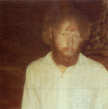
|
Songs
Do You Want Me (6:09) /
Gate Strikes One (8:52) /
I’m Not That Good (6:18) /
The Slow Burn (6:16) /
It’s Only You (6:03) /
Every Sentence (9:36)
Cover If you thought Jandek was a hairball on the cover of White Box Requiem, wait until you see this
one. He looks like a White Panther or a castaway on a desert island.
He is glaring sullenly at a point a thousand miles behind the
cameraman’s head and on his face is the most absolute
possible imaginable absence of a smile. Bet you anything the rest
of his family is off to the right.
Data This album, following hot on the heels of Jandek’s
live performance in Scotland, is his third release of 2004, and
it’s not even November yet. Suddenly Jandek is irrepressible.
The lyrics don’t match any of the songs from the live show.
It’s voice and electric guitar — definitely of a piece
with the last one, musically.
Review excerpts
- Aaron
Goldberg, web
review for Perfect Sound Forever.
“Electric flange-guitar is still the sonic cause of events,
songs are shorter and more sedate than The End of It All,
making it a bit of a more difficult listen.”
|
Corwood 0777
![[album cover]](images/covers/thumb-0777.jpg)
|
Songs
I Gave My Eternity (10:58) /
Real Afternoons (5:32) /
A Windy Time (3:10) /
Your Own Little World (4:35) /
Sticks in the Marsh (4:32) /
No One Knows Your Name (3:38) /
It Rang Eleven Times (3:50)
Cover A contemporary Jandek, looking not unlike the man that
played in Scotland, though that one was clean shaven.
Data Jandek’s fourth new album of 2004.
Review excerpts
-
Kevin John, The Village Voice
(http://www.villagevoice.com/music/0510,john,61827,22.html),
March 8, 2005. “Both Jandek and Milli Vanilli taught semiotics
as expertly as Umberto Eco... and both were quintessential products of
the 1980s. What better way to respond to supply-side Reaganomics than
with a music that places all the action on the consumer demand side of
the equation... But as the man starts coming out of the closet more
and more, his music must now distinguish him from any other sad-sack
singer-songwriter out there. And the stream-of-consciousness DIY
folk-blues in this kingdom cannot retain interest much longer.”
- Aaron
Goldberg, web
review for Perfect Sound Forever.
“...finds Jandek reflecting on his ‘fame’ and thinking long and
hard about the ‘modern world&rsquo, even technology...”
|
Corwood 0778
![[album cover]](images/covers/thumb-0778.jpg)
|
Songs
I Talked to You Today (4:07) /
When I See You Again (2:52) /
The Image of You (3:27) /
Close to You (3:22) /
You Took Me for a Ride (4:13) /
What Else Is There (2:16) /
Wouldn’t You Agree (3:22) /
You Made Me Know It (2:45) /
Angel Moves (3:43) /
Thing Called Me (5:43) /
My Escape (6:50)
Cover Another fairly contemporary, bearded Jandek, sporting a
hat and tan suit. He looks younger and less thin than on
A Kingdom He Likes. It’s been
raining and his feet and legs are reflected in the wet pavement. Is
that an umbrella in his left hand? Even though he’s standing in
a public square in the center of London, the photo is strangely empty
of other human figures. (At least, it gives that impression;
actually, you can pick out a few people behind him.) Who took this
photo, a friend, or a passerby? The building with the pillars
is Mansion
House, official residence of the Lord Mayor of London (not to be
confused with the regular mayor).
See http://www.lynns_postcards.gaulin.com/cheapside.jpg
for a vintage postcard view. The tube stop in the background is Bank;
the ironwork in the left foreground forms part of another entrance.
(There is a Mansion House house stop, but strangely, it is several
minutes’ walk away.) Closed circuit TV cameras survey the scene
from overhead. The building on the right houses Mappin and Webb
jewelers; note the Christmas trees above the entrance. The building
was empty after about 1986 and was demolished in 1993 or 1994. After
an archaelogical dig (the site was inhabited in Roman times), a new
building was erected in 1998. The cars are 1980’s cars, so the
photo must be from the mid or perhaps early 1980’s.
Comments See Paul Condon’s commentary at
http://mylist.net/archives/jandek/2005-March/001080.html.
Review excerpts
|
Corwood 0779
![[album cover]](images/covers/thumb-0779.jpg)
|
Songs
Not Even Water (10:24) /
Where I Stay (7:29) /
Darkness You Give (9:37) /
Sea of Red (7:50) /
Real Wild (6:25) /
Don’t Want to Be (5:55) /
Blue Blue World (6:42) /
The Other Side (6:48)
Cover Another snapshot of a street with a church at
the end (see also I Threw You Away).
Judging from the cars, the photo was probably taken in the
1980’s. The car in the foreground looks American, but
I can’t conclusively place the street on a particular
side of the Atlantic. Anyone recognize the church?
Data (CD) Credit on the back says “RECORDED LIVE: THE ARCHES
GLASGOW SCOTLAND OCTOBER 17, 2004.” See the Concerts page for details on the performance.
The rhythm section of Richard Youngs (bass) and Alexander Neilson
(drums) is uncredited. The audio quality is a bit better than the
audience recording that started circulating on the net shortly after
the show, but they both have audience chatter audible from time to
time during the music. The applause after each song is included. The
CD was available in Scotland a couple weeks before copies surfaced in
the U.S.; a note from Corwood received mid-April 2005 explained,
“Corwood 0779
Glasgow Sunday has been prereleased in Scotland. It will be
released in the USA the last week of April.”
Data (DVD) “Aspect Ratio: 4:3”, the back cover
informs us. No squashed or elongated Jandeks, please. You can choose
to watch Camera 1, Camera 2, or a “2 camera mix edit”.
Both the CD and the DVD editions have the same front cover art and
contain all of the songs that were performed.
Comments (DVD)
See
http://mylist.net/archives/jandek/2006-June/002897.html
for commentary by Danen Jobe.
Review excerpts (CD)
-
Scott Mou, Other Music web site
(http://www.othermusic.com/),
2005. “Blood curdling live set... Jandek displays surprising
force and confidence, seemingly hammering away at the guitar with a
closed fist while accompanied by Richard Youngs on bass and local
kindred spirit, Alex Neilson, masterfully stuttering alongside Jandek
on the drums. Unlike the bootleg floating around the Internet, the
drums and vocals mesh together well in the forefront, while the bass
drone/throb and rattled cage guitar fall back... Enthusiastic applause
also included. ”
- uncredited, Aquarius Records catalog
(website), 2005.
“No matter what your opinion is of Jandek’s decision to
make a public appearance, this recording is fantastic. Youngs and
Neilson keep their input strictly as a rhythm section, never to upstage
Jandek himself. Throughout the entire set, Youngs keeps his bass
within a controlled variation of an elliptical throb and Neilson does
the quiet tumble down the stairs thing on the drum kit. But it’s
Jandek who really shines. His strangulated blues chords have the same
jangling atonality of his earliest records... and his deepened
baritone voice snakes through his signature revelatory darkness... If
Jandek’s going to come out of his shell to make records this
good, who are we to complain!?”
- David Keenan, Volcanic Tongue catalog
(link), 2005.
“...the first public appearance of his 26 year recording career,
simultaneously quashing three decades worth of speculation while
inspiring a whole bunch more. But the main thing that makes Glasgow
Sunday such an important document has less to do with how it
relates to Smith’s personal mythos and more to do with how it
inaugurates a group that already looks to be one of the most formally
inventive units of the modern age. Between them, the trio... have
birthed a free music with an internal dynamic and shared musical
language as singular and historically unparalleled as late-20th
century behemoths like Albert Ayler’s Spiritual Unity
trio, Keiji Haino’s Fushitsusha, Harry Pussy, and Musica
Transonic. Crucially, Glasgow Sunday is a group record... The
first time they ever played together was actually earlier on the same
day of the concert... [but] the terms of their musical relationship
were sealed the instant they began to play. Smith’s current
guitar form is most immediately related to the series of recordings he
made between 1982 and 1987... [that] were characterised by bouts of
ferocious atonal guitar. But here he digs deeper and harder into the
magic confluence of overtones encouraged by the more esoteric open
tunings. His chords sound like they’re augmented with barbed
wire and his soloing &mdashl of which there’s plenty — is
somewhere between Keiji Haino’s dense, clean guitar work on
Fushitsusha’s John Zorn-produced album Allegorical
Misunderstanding, and Harry Pussy guitarist Bill Orcutt circa
‘Nazi USA’. Youngs plays electric bass with a tremolo
pulse that sounds a bit like Holger Czukay and the way he pilots odd,
beautiful notes straight to the heart of the individual tracks is
particularly fearless. Drummer Alex Neilson is the real wildcard. In
recent years he has become the most in-demand improvising drummer in
Scotland and his playing here is particularly key in terms of defining
the basic heft of the sound. Beyond even the bizarre physical
resemblance — several people on the night asked if it was
Jandek’s son that was playing the drums — there’s
obviously a deep level of rapport between the two and during the
instrumental breaks Smith seems to be soloing more in relation to
Neilson’s tonal and rhythmic suggestions than Youngs’
harmonic ones... Neilson takes it upon himself to push the music
somewhere else, alternating explosive polyrhythms with moments of pure
textural abandon and accelerated breaks. At one point he even stands
up and starts to sing. As with every Jandek project, Glasgow
Sunday feels like an extended investigation into a single colour
or state... emotionally, lyrically and sonically. Each track draws its
deepest architecture from archetypal blues forms, with vocal lulls
alternating with extended chord solos and emphatic rhythms. Like the
late Albert Ayler, Jandek has a way of hijacking the basest/purest of
folk-forms and extrapolating them into the heavens — or in this
case, personal hells. Lyrically there are several references to water,
seas and drowning, lots of reds and blues, and some of the tracks are
unrelentingly bleak, reading like long, airless litanies of hurt. But
there’s also plenty of black humour and at points you
can’t help but feel that Jandek is poking fun at his own image
and playing to the crowd. The moment when he erupts with the line
‘I made the decision to get real wild’ sees the whole
audience explode into cheers... Who would’ve thought it?
Jandek, it turns out, is a group.”
- Aaron
Goldberg, web
review for Perfect Sound Forever.
“...like all great artists they eventually gotta do the live
album... An amorphous surging, coagulating blob of a live performance,
Jandek's electrified death-rattle guitar is immediately reminiscent of
Rowland S. Howard's playing on... live Birthday Party. But fortunate
for Jandek is the fact that he has a totally cooking backing-band help
elevate his sound above junkie skronk (which it still is, mind you)
into some sort of free-jazz-rock-implosion with lyrics... ‘Real
Wild’... builds and builds and builds in Jandek's water-treading
death-knell-guitar style, before he pauses to tell us: ‘I made a
decision... to get REAL WILD!’ before collapsing in on itself
like a Black Hole. Who said he can't rock out like the best of them?
Glasgow Sunday is a great, great live, real time document of the
improvised miasma of Jandek, distilled and purified for his legions of
fans to enjoy.”
|
Corwood 0780
![[album cover]](images/covers/thumb-0780.jpg)
|
Songs
What Things Are (5:54) /
I Stared (4:42) /
It’s Forever (3:21) /
You Ancient (3:58) /
Take My Will (8:24) /
New Rendezvous (9:37) /
Your Visitor (8:16)
Cover Cover appears to blurrily depict Jandek on a
youthful pilgrimage to Mecca.
Data “Take My Will” is a reprise of a song from
Glad to Get Away (1994).
Comments Voice and bass.
Review excerpts
- Aaron
Goldberg, web
review for Perfect Sound Forever.
“...maybe Jandek is making
some obscure statement about Islamic fundamentalism or something? He's
back to playing his muted-free-form bass again, though here his voice
sounds neurotic, fearful, and terrified. He's actually trying to play
the bass more, rather than just slap and scratch it, so the overall
sonics of the album are far warmer than previous bass-only
records. It's easily his best 'bass' album, and his jazziest to
boot... Extended closing
tracks ‘New Rendezvous’ and ‘Your Visitor’ throb and undulate into
infinity, ending perfectly with a whimper.”
|
Corwood 0781
![[album cover]](images/covers/thumb-0781.jpg)
|
Songs
You Wanted to Leave (6:36) /
Fragmentation (5:53) /
I Shot Myself (4:44) /
New Dimension (5:16) /
Khartoum (9:43) /
In a Chair I Stare (5:50) /
Move from the Mountain (7:55) /
Fork in the Road (5:40)
Cover A man who’s gouged his eyes out to get closer to
the spirit world.
Data Voice and acoustic guitar. See
http://mylist.net/archives/jandek/2005-October/001992.html.
You can read up on the city of Khartoum at
at Wikipedia.
It’s the capital of the Sudan; the government complicit in,
if not outright responsible for, the genocide in Darfur is
headquartered there. It’s also the location of the
pharmaceutical factory Clinton ordered bombed in 1998 for allegedly
supplying Osama bin Laden with ingredients for chemical weapons.
Comments The guitar playing and sound here distinctly recall
a pair of classics from 1994, Graven Image and
Glad to Get Away. But it’s an
updated version, bolder, more forceful, and incorporating some of the
denser, harsher, janglier sound of the post-spoken-word guitar albums.
To my ears, the playing combines the best aspects of the recent guitar
albums and those from ten years ago. I’ve said elsewhere about
the 2005 shows in Austin and Brooklyn that Jandek’s guitar
playing is at a peak right now; you can hear that here as well.
The title (in combination with the cover
photo) create an expectation that the lyrics will reference current
events. And sure enough, some lines in the first song seem to be
about the World Trade Center: “I wanted to go to the spirit
world/ But you were large, large, large, large/ Now you’re all
powder/ Gone up in smoke/ Gone down in thunder/ You’re part of
my dream...” It seems unmistakable, but there’s nothing
else in that song or any song that references the same theme; it seems
to be a metaphor he uses once and then discards. But then why
“Khartoum”? Even the song of that name seems to be just
another song about a woman who’s gone now. One song begins,
“You’re married, I presume?” In another, Jandek
confesses “I don’t know what to do except sit in a
chair.”
Review excerpts
-
uncredited, Forced Exposure web site
(http://www.forcedexposure.com/),
2005. “Fantastic, acoustic, classic Jandekian masterwork in
the vein of his mid-period work Graven Image or Glad to Get
Away.”
- uncredited, Aquarius Records catalog
(website), 2005.
“...his music remains as raw and mysterious as ever...
Khartoum consists of alienated, atonal strum-und-twang, teamed
with loosely demented vocals, sometimes quietly spoken, sometimes
pitched to a warbling holler, delivered with the stream of
conciousness lyrical logic of a homeless poet. These songs... seem
fixated on past (broken) relationships, forgiveness, regret, and
despair... It’s a soul laid bare, speaking directly but in such
an idiosyncratic manner that it will only be heard by those with a
will to listen. Seriously, his scrabble of strings and chaotic
chording provides almost a respite from his depressed words and
sometimes excruciatingly miserable wail, one that at times reminds us
of Oxbow’s Eugene Robinson.”
|
Corwood 0782
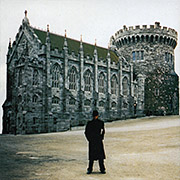
|
Songs
You Wanted to Leave (9:15) /
Fragmentation (6:16) /
I Shot Myself (6:42) /
New Dimension (5:10) /
Khartoum (8:14) /
In a Chair I Stare (5:27) /
Move from the Mountain (8:13)
Cover The man from C.O.R.W.O.O.D. standing in front of Dublin Castle in
Ireland; here’s an uncredited shot found
online taken from a similar location and angle. Note that the cover
photo has been altered along its left and right edges to omit adjacent
sections of the structure, and two drainpipes seem to have been
retouched out of existence.
Data Alternate versions of the previous album’s songs,
minus one.
|
Corwood 0783
![[album cover]](images/covers/thumb-0783.jpg)
|
Songs
Disc 1:
Depression (8:11) /
Other End of Town (5:26) /
Every Morning (6:59) /
All of a Sudden (6:57) /
Locked Up (4:33) /
Put It Up (6:08) /
Mangled and Dead (6:11);
Disc 2:
Some Other Name (6:20) /
Telephone Blues (7:08) /
Cottage in the Rain (6:35) /
Sheba Doesn’t Have (8:48) /
Shadow of the Clouds (11:17)
Cover A long way from
Newcastle: Dover
Castle in southern England;
see http://www.moonrise.ws/Pictures/Album-08/DoverWalls.jpg.
(Thanks to Ian Hill for making the connection.)
Data (CD) The first ever double CD from Corwood.
Credit on the back says “RECORDED LIVE: THE SAGE
GATESHEAD ENGLAND MAY 22, 2005.” See the Concerts page for details on the performance.
The rhythm section of Richard Youngs (bass) and Alexander Neilson
(drums) is uncredited. The guitar and vocals are mixed rather loud,
so you may wish to listen on headphones, and/or boost the bass response
on your stereo, in order to fully appreciate Youngs’ and
Neilson’s contributions.
Data (DVD) “Aspect Ratio: 4:3”, says the back.
You can choose to watch Camera 1 or Camera 2; there is no “2
camera mix edit” this time. Both the CD and the DVD editions
have the same front cover art and contain all of the songs that were
performed.
Review excerpts
- Aaron
Goldberg, web
review for Perfect Sound Forever (actually a review of an audience
recording of the concert, before the official release came out).
“...as good, if not better than the Instal/Glasgow Sunday
one... flange-guitar strum, noodle jazz bass and
free-flowing drums, sounding not unlike the Jimi Hendrix Experience on
qualuudes. But there's definitely a ‘funk’ going on in this set,
before Jandek opens his mouth and says ‘I thought I'd give you... a
little bit of DEPRESSION!!!!’ That's right, the man has made a fucken
anthem for the Prozac-nation...
The set continues a downward looping spiral lyrics-wise as Jandek
sings about the electric chair, trying to find friends, and being a
loser-in-life in general. But the synergy between the players here is
even better than Glasgow Sunday producing some of the most intense,
challenging and incredibly FRESH avant-garde music going today...
the deep dark hole that he's been digging seems to finally be bringing up the
blackest of gold.”
|
Corwood 0784
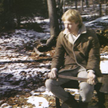
|
Songs
My Own Way (16:34) /
Walk Over (5:00) /
Japanese Cup (7:24) /
Walls Down (5:27) /
The Place (6:36) /
I’ve Been a Body (7:16) /
I’m Sorry No (8:01) /
If I Waited Twenty Hours (3:56)
Cover Jandek wields an axe.
|
Corwood 0785
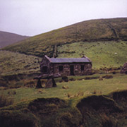
|
Songs
The Cell:
Disc 1:
Prelude (5:12) /
Part One (10:26) /
Part Two (8:25) /
Part Three (11:04) /
Part Four (9:15);
Disc 2:
Part Five (7:40) /
Part Six (6:21) /
Part Seven (7:51) /
Part Eight (6:29) /
Part Nine (12:10)
Cover A solitary stone house in a hilly country
landscape, probably in the U.K. The doors and windows
are pitch black.
Data (CD) Another live double disc.
According to the spine, the name of the album is Glasgow Monday.
But the name
of the composition it contains is “The Cell”; this
is printed above the track listing.
The credit on the back says “RECORDED LIVE: CENTER
FOR CONTEMPORARY ARTS GLASGOW SCOTLAND MAY 23, 2005.” See the Concerts page for details on the performance.
Jandek plays piano throughout and sings; he is accompanied by
Richard Youngs (bowed upright bass) and Alexander Neilson
(percussion), both uncredited.
Data (DVD) Both the CD and the DVD editions have the same
front cover art and contain all of the music that was performed.
|
Corwood 0786
![[album cover]](images/covers/thumb-0786.jpg)
|
Songs
Disc 1:
Throw Me Away /
Ugly Man /
Lithe Body /
The Police /
Run Away /
If I Wanted;
Disc 2:
Wine You Devil /
You Hold Me Up /
You Just About Killed Me /
Little While /
Lonely Dog /
Let Me Try Again
Data
Another live double disc.
The credit on the back says “RECORDED LIVE:
SCOTTISH RITE THEATRE AUSTIN TEXAS AUGUST 28, 2005.”
See the Concerts page for details on the performance.
The representative from Corwood plays electric guitar and sings; he is accompanied by
Juan Garcia (electric bass), Nick Hennies (drums), and Chris
Cogburn (drums).
See also
http://mylist.net/archives/jandek/2006-November/003339.html.
Data (DVD) Both the CD and the DVD editions have the same
front cover art and contain all of the music that was performed.
The DVD contains all of the footage shot by both cameras, one a fixed
camera in back, the other a roving handheld camera near the stage.
You either watch one, or the other; there’s no edited version
mixing footage from both cameras.
|
Corwood 0787
![[album cover]](images/covers/thumb-0787.jpg)
|
Songs
The Park (10:08) /
Bluff Brink (8:10) /
Completely Yours (7:10) /
Mysteries of Existence (6:42) /
The Ruins of Adventure (14:28)
Cover A closeup of the same photograph previously used on
What Else Does the Time Mean.
Data
Vocals and fretless electric bass.
Comments
See http://mylist.net/archives/jandek/2006-December/003498.html and http://mylist.net/archives/jandek/2006-December/003500.html for commentary by Danen Jobe.
|
Corwood 0788
![[album cover]](images/covers/thumb-0788.jpg)
|
Another live double disc.
According to the spine, the name of the album is Manhattan Tuesday.
But the name
of the composition it contains is “Afternoon of Insensitivity”; this
is printed above the track listing.
The credit on the back says “RECORDED LIVE:
ANTHOLOGY FILM ARCHIVES MANHATTAN NEW YORK SEPTEMBER 6, 2005.”
The representative from Corwood plays Korg synthesizers (set to
organ-like sounds) and sings; he is accompanied by
Loren Connors (electric guitar), Matt Heyner (bass), and Chris
Corsano (drums).
See the Concerts page for details on the performance.
Data (DVD) Both the CD and the DVD editions have the same
front cover art and contain all of the music that was performed
in front of an audience.
On the DVD edition, the whole concert fits on the first disc.
The second disc, included at no extra charge, contains footage
of the preconcert rehearsal that afternoon (!!!).
Comments
See http://mylist.net/archives/jandek/2007-May/003911.html
for commentary by Danen Jobe.
|
Corwood 0789
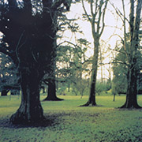
|
BROOKLYN WEDNESDAY
(4CD, 2007)
(2DVD, 2008)
Songs
Set One:
Disc 1:
Put Me There (11:21) /
Destroy the Day (10:43) /
Obscure Physics (8:26) /
Structure of Words (9:02);
Disc 2:
All I Want (5:11) /
Lonely World (8:32) /
Change My Brain (9:51) /
I’ll Send a Thought Out Floating /
I Love You (10:51)
Set Two:
Disc 1:
How ’r You (13:31) /
City Pounding Down (12:12) /
Different Blues (9:21) /
My Necessity (8:21);
Disc 2:
Sea of People (7:59) /
Sorry, Sorry (9:13) /
Tequila Girl (10:54) /
Just Enough (10:15)
Lyrics
Data
Jandek’s first box set, a 4 CD set, two jewel cases in a cardboard
slipcover.
The representative from Corwood plays electric guitar (first set)
and fretless electric guitar (second set), accompanied
by Matt Heyner (bass) and Chris Corsano (drums).
See the Concerts page for details on the performance.
Data (DVD) Both the CD and the DVD editions have the same
front cover art and contain all of the music that was performed.
|
Corwood 0790
|
THE MYTH OF BLUE ICICLES
(CD, 2008)
Songs
Too Course (7:30) /
Blue Icicles (9:45) /
The Daze (14:29) /
There’s No Door (5:11)
Lyrics
Cover Jandek high in a skyscraper, with the view of some
other tall buildings in Houston behind him.
Note the reflection near the right edge.
Data
Voice and acoustic guitar.
The back says copyright 2007, but the disc wasn’t available from
Corwood until February 2008.
“Too Course” is a misspelling; it should be “Too Coarse”.
|
Corwood 0791
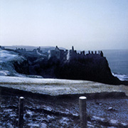
|
GLASGOW FRIDAY
(CD, 2008)
(DVD, 2008)
Songs
Walking Blues (13:08) /
Goodbye Today (6:45) /
This Wasted Life (6:14) /
Slave of the River (6:08) /
My Plan (10:48) /
If I Could Be with You (6:36) /
Out and About (6:13) /
These Kokomos (9:24) /
Something New (5:41) /
Arms of a Stranger (6:47)
Lyrics
Data
The credit on the back says “RECORDED LIVE:
THE ARCHES GLASGOW SCOTLAND OCTOBER 14, 2005.”
The representative from Corwood plays electric guitar,
accompanied by Richard Youngs (bass) and Alex Neilson (drums).
See the Concerts page for details on the performance.
Data (DVD) Both the CD and the DVD editions have the same
front cover art and contain all of the music that was performed.
|
Corwood 0792
![[album cover]](images/covers/thumb-0792.jpg)
|
GLASGOW SUNDAY 2005
(CD, 2008)
(DVD, 2009)
Songs
The Grassy Knoll (25:26) /
Tribal Ether (24:47)
Lyrics
Data
The credit on the back says “RECORDED LIVE:
THE ARCHES GLASGOW SCOTLAND OCTOBER 16, 2005”.
On the first track the representative from Corwood delivers a long spoken
narrative. He also sings and plays harmonica. He is backed by Loren Connors on
electric guitar. On the second track, the rep plays drum kit, with Heather
Leigh Murray on lap steel guitar and wordless vocals and Alan Licht
on electric guitar. See the Concerts page for details on the performance.
Data (DVD) Both the CD and the DVD editions have the same
front cover art and contain all of the music that was performed.
|
Corwood 0793
![[album cover]](images/covers/thumb-0793.jpg)
|
LONDON TUESDAY
(CD, 2008)
(DVD, 2009)
Songs
No Mind Was a Good Mind:
Part One (9:25) /
Part Two (7:19) /
Part Three (6:59) /
Part Four (8:05) /
Part Five (7:25) /
Part Six (7:19) /
Part Seven (9:35) /
Part Eight (11:04)
Lyrics
Data
The credit on the back says “RECORDED LIVE:
ST. GILES IN THE FIELDS LONDON ENGLAND OCTOBER 18, 2005”.
The representative from Corwood sings and plays acoustic guitar.
See the Concerts page for details on the performance.
Data (DVD) Both the CD and the DVD editions have the same
front cover art and contain all of the music that was performed.
|
Corwood 0794
![[album cover]](images/covers/thumb-0794.jpg)
|
SKIRTING THE EDGE
(CD, 2008)
Songs
The Side of the Road (7:08) /
I Know My Name (23:43) /
The Playground (7:53) /
Last Sunlight (11:57)
Lyrics
Data
Vocals and acoustic guitar.
|
Corwood 0795
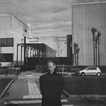
|
HASSELT SATURDAY
(CD, 2009)
Songs
The Places You Left Me:
Part One (10:14) /
Part Two (6:44) /
Part Three (7:07) /
Part Four (7:42) /
Part Five (7:59) /
Part Six (7:41) /
Part Seven (7:29) /
Part Eight (10:01)
Lyrics
Data
The credit on the back says “RECORDED LIVE:
KUNSTCENTRUM BELGIE HASSELT BELGIUM NOVEMBER 12, 2005”.
The representative from Corwood plays piano and sings.
See the Concerts page for details on the performance.
|
Corwood 0796
![[album cover]](images/covers/thumb-0796.jpg)
|
HELSINKI SATURDAY
(CD, 2009)
Songs
Sleeping in the Dawn (1:03:32)
Lyrics
Data
The credit on the back says “RECORDED LIVE:
GLORIA KULTTUURIAREENA HELSINKI FINLAND NOVEMBER 19, 2005”.
The representative from Corwood plays piano, accompanied by
Iro Haarla on harp. There are no vocals.
See the Concerts page for details on the performance.
A 4:18 excerpt from the performance was released in 2005 on
the Avanto-Festivaali 2005 CD-R (Avanto AAAAA-2005).
Jandek’s track leads off the compilation. There are nine
different covers, two of which are shown here; see the Avanto
site’s page
about the compilation to see small versions of the rest. (The same
page also has the full track listing; the other artists include Alva
Noto, Blixa Bargeld, and Sudden Infant.) You can order the CD-R for
11 euros from
Avanto’s catalog
page.
|
Corwood 0797
![[album cover]](images/covers/thumb-0797.jpg)
|
NOT HUNTING FOR MEANING
(CD, 2009)
Songs
Front Porch Shimmy (4:10) /
Stay Me Here (4:55) /
Silent Wander (29:23)
Lyrics
Data
Vocals and acoustic guitar.
|
|
|
|
|
|
|
|
[ Return to the Jandek main page ]
|
![[album cover]](images/covers/0740.jpg)
![[album cover]](images/covers/0741.jpg)
![[album cover]](images/covers/0742.jpg)
![[album cover]](images/covers/0743.jpg)
![[album cover]](images/covers/0744.jpg)
![[album cover]](images/covers/0745.jpg)
![[album cover]](images/covers/0747.jpg)
![[album cover]](images/covers/0750.jpg)
![[album cover]](images/covers/0751.jpg)
![[album cover]](images/covers/0752.jpg)
![[album cover]](images/covers/0753.jpg)
![[album cover]](images/covers/0754.jpg)
![[album cover]](images/covers/0758.jpg)
![[album cover]](images/covers/0763.jpg)
![[album cover]](images/covers/0764.jpg)
![[album cover]](images/covers/0765.jpg)
![[album cover]](images/covers/0769.jpg)
![[album cover]](images/covers/0775.jpg)
![[album cover]](images/covers/0777.jpg)
![[album cover]](images/covers/0778.jpg)
![[album cover]](images/covers/0779.jpg)
![[album cover]](images/covers/0780.jpg)
![[album cover]](images/covers/0781.jpg)
![[album cover]](images/covers/0783.jpg)
![[album cover]](images/covers/0786.jpg)
![[album cover]](images/covers/0787.jpg)
![[album cover]](images/covers/0788.jpg)
![[album cover]](images/covers/0792.jpg)
![[album cover]](images/covers/0793.jpg)
![[album cover]](images/covers/0794.jpg)
![[album cover]](images/covers/0796.jpg)
![[album cover]](images/covers/0797.jpg)
{kind=link}
{kind=link}
{kind=link}
{kind=link}
{kind=link}
{kind=link}
{kind=link}
{kind=link}
{kind=link}
{kind=link}
{kind=link}
{kind=link}
{kind=link}
{kind=link}
{kind=link}
{kind=link}
{kind=link}
{kind=link}
{kind=link}
{kind=link}
{kind=link}
{kind=link}
{kind=link}
{kind=link}
{kind=link}
{kind=link}
{kind=link}
{kind=link}
{kind=link}
{kind=link}
{kind=link}
{kind=link}
{kind=link}